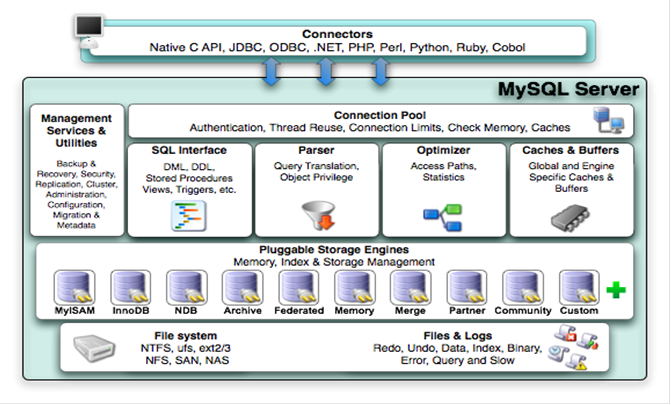
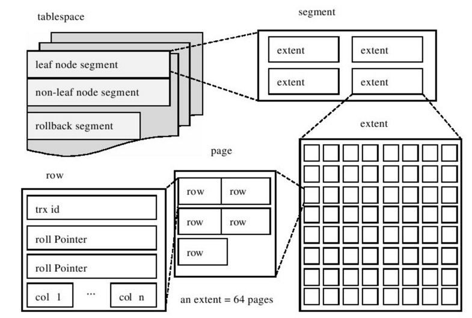

才不足则多谋，识不足则多虑；威不足则多怒，信不足则多言。 —— 清·陈宏谋《养正遗规》
MySQL工作原理

对应图：Oracle 官方文档的 MySQL Server 架构图（连接层 → Server 层 → 存储引擎层 → 文件系统与日志）。
图的年代偏 5.6/5.7，8.0 有两处结构性变化：查询缓存被移除、数据字典事务化。笔记中逐处标注。
零、先把图读成三层
| 层 | 图中包含 | 一句话职责 |
|---|---|---|
| ① 连接层 | Connectors（Native C API / JDBC / ODBC / .NET / PHP / Perl / Python / Ruby / Cobol） | 各语言客户端通过 TCP/Socket 用 MySQL 协议连进来 |
| ② Server 层（MySQL Server 框内上半） | Connection Pool、Management Services & Utilities、SQL Interface、Parser、Optimizer、Caches & Buffers | 接连接、懂 SQL、算执行计划、管缓存与元数据 —— 与引擎无关的通用逻辑 |
| ③ 存储引擎层 | Pluggable Storage Engines（MyISAM、InnoDB、NDB、Archive、Federated、Memory、Merge…） | 真正把数据写到磁盘/内存、管索引与事务 —— 可插拔，按表选择 |
| ④ 文件与系统层 | File system（NTFS/ufs/ext2-3/NFS/SAN/NAS）、Files & Logs（Redo、Undo、Data、Index、Binary、Error、Query、Slow） | 数据文件与各类日志落地 |
图右侧还有一列”Management Services & Utilities“（Backup & Recovery、Security、Replication、Cluster、Administration、Configuration、Migration & Metadata），它不属于某一次请求的必经路径，而是贯穿全系统的支撑能力。
关键认知：Server 层负责”怎么查”，引擎层负责”怎么取/怎么存”。同一条 SQL 在 Server 层解析、优化完后，把”取哪一行、用什么索引”的指令下发给引擎，引擎返回行，Server 层再组装结果。
一、Connectors：连接层
- 各语言驱动（PHP 的
mysqli/pdo_mysql、Java 的 JDBC、Python 的PyMySQL、Go 的go-sql-driver）本质都在实现 MySQL Client/Server 协议。 - 传输方式两种：
- TCP/IP：
127.0.0.1:3306或远程地址，跨主机必经。 - Unix Socket / 命名管道 / 共享内存：本机同机通信，省掉 TCP 栈，
localhost时 PHP 若配socket路径会更快。
- TCP/IP：
- 连接建立即”三次握手 + 认证握手”，每次建连的成本远高于一次查询本身（TCP 握手 + 认证 + 分配线程 + 初始化会话内存）。这就是”应用必须用连接池”的根本原因。
- 协议层细节：半双工、一问一答（pipeline 支持有限）、
max_allowed_packet限制单包大小、net_buffer_length控制通信缓冲。
实践：PHP-FPM 短连接模式下并发一高就出现
Too many connections，不是 MySQL 慢，是这一层在反复建连。
二、Connection Pool：连接管理
图中标注的四件事：Authentication（认证）、Thread Reuse（线程复用）、Connection Limits（连接上限）、Check Memory（内存检查）、Caches（缓存）。
2.1 线程模型：一连接一线程
- 默认模型
one-thread-per-connection：每个客户端连接对应一个服务端线程，连接不断线程不释放，只是归还到线程缓存。 thread_cache_size：线程缓存大小。连接断开时线程进缓存，新连接直接复用，省掉创建线程的开销。命中率看Threads_created/Connections。- 企业版/Percona 有 thread pool 插件（
thread_handling=pool-of-threads），用少量工作线程处理大量连接，适合超高并发短查询；社区版默认没有。 - 每个连接都有自己的会话内存：
sort_buffer_size、join_buffer_size、read_buffer_size、net_buffer_length。这些是 per-connection 的，max_connections × buffer就是最坏情况内存占用 —— 图里”Check Memory”说的就是这个。
2.2 认证与会话
- 认证插件决定握手方式：5.7 默认
mysql_native_password，8.0 默认caching_sha2_password。 - 认证通过后建立会话状态：
@@session变量、当前库、事务状态、临时表、LAST_INSERT_ID、用户变量等。这些是连接私有的，连接池复用时要注意”会话污染”（SET过的变量、未提交事务、临时表）。
2.3 连接上限与超时
| 参数 | 作用 |
|---|---|
max_connections |
最大并发连接数，超了报 ERROR 1040: Too many connections |
max_user_connections |
单账号上限 |
wait_timeout / interactive_timeout |
空闲连接多久被回收（默认 8 小时，应用侧要小于它） |
max_connect_errors |
同一主机握手失败次数上限，防暴力破解（会 Host is blocked） |
back_log |
TCP 已完成握手但还没被 accept 的队列长度 |
连接数打满时的应急：临时
SET GLOBAL max_connections=500;（重启失效），再定位是谁占着 ——SHOW PROCESSLIST/performance_schema.threads。
三、Management Services & Utilities：全局支撑能力
图上这一列不是请求路径，但每一个都会”从旁边”影响主链路：
| 模块 | 对应实现 |
|---|---|
| Backup & Recovery | mysqldump（逻辑）、mysqlpump、mysqlbackup（企业版物理热备）、XtraBackup（开源物理热备）、binlog 增量恢复 |
| Security | 账号/角色、validate_password、TLS、审计插件、权限体系（全局/库/表/列） |
| Replication | 主从（binlog → relay log）、半同步、组复制（MGR）、GTID |
| Cluster | InnoDB Cluster（MGR + Router）、NDB Cluster |
| Administration | SHOW 系列、performance_schema、sys schema、information_schema |
| Configuration | 配置文件 + SET GLOBAL/SESSION + CONFIG 类动态参数 |
| Migration & Metadata | 数据字典、MDL（元数据锁）、information_schema、8.0 的事务性数据字典 |
MDL 特别说明：DDL 与 DML 之间靠元数据锁互斥。一个长事务持有表的 MDL，后续 ALTER TABLE 会一直等，进而堵住后面所有该表的 DML（表现为”数据库突然全卡住”）。这是运维最常见的”隐形锁”。
四、SQL Interface：SQL 的入口
图中列的是 DML、DDL、Stored Procedures、Views、Triggers, etc.
- 它是”SQL 语句的分类与分发入口”：
SELECT/INSERT/UPDATE/DELETE（DML）、CREATE/ALTER/DROP（DDL）、存储过程/函数、视图、触发器、CALL、PREPARE/EXECUTE（预处理语句）。 - 视图在 Server 层被展开成对基表的查询；触发器在 DML 前后被插入执行；存储过程在 Server 层用解释器执行，内部 SQL 仍走完整的解析→优化→执行链路。
- 预处理语句（
PREPARE）的价值：解析一次、执行多次，省掉重复的词法语法分析（注意：优化仍会每次重新做，除非用EXECUTE IMMEDIATE之外的缓存机制）。
五、Parser：把字符串变成”可执行的结构”
图中标注：Query Translation（查询翻译）、Object Privilege（对象权限）。
- 词法分析：把 SQL 切成 token（关键字、标识符、常量、运算符）。
- 语法分析：按 Bison 语法规则构建语法树（AST）；语法错误在这一步抛出 —— 你看到的
ERROR 1064 (42000): You have an error in your SQL syntax就来自这里。 - 语义检查：表/列是否存在、别名是否冲突、函数参数个数、类型是否可转换。
- 权限校验：检查当前账号对涉及对象（表、列、库）是否有对应权限（
SELECT/INSERT…），以及PROCESS等全局权限。失败返回ERROR 1142（SELECT command denied）。 - 产出：内部表示 + 执行上下文，交给优化器。
要点：解析器不关心用哪个存储引擎，它只认 SQL 语法与元数据。
六、Optimizer：决定”怎么查最快”
图中标注：Access Paths（访问路径）、Statistics（统计信息）。
6.1 成本模型（CBO）
MySQL 用基于代价的优化器（Cost-Based Optimizer），不是简单的规则优化。它估算每种执行方案的代价，选最低的：
- 行数估算：靠统计信息 —— InnoDB 的索引统计（
innodb_stats_persistent持久化到mysql.innodb_index_stats）、ANALYZE TABLE刷新。 - 代价估算：读一页的成本（
io_block_read_cost）、内存命中成本（memory_block_read_cost）、CPU 比较成本。 - 三类代价：IO 代价 + CPU 代价 + 内存代价。
6.2 它到底优化什么
| 决策点 | 说明 |
|---|---|
| 访问路径 | 全表扫描 vs 索引扫描 vs 索引覆盖 vs ref/range/const；能否用 index_merge |
| 索引选择 | 多个候选索引里选哪个；能否用覆盖索引避免回表 |
| Join 顺序与算法 | 多表谁是驱动表、Nested Loop / Hash Join（8.0.18+）/ Batched Key Access |
| 子查询改写 | IN 改半连接、EXISTS 转半连接、派生表合并（derived_merge）、GROUP BY 是否用松散索引 |
| 条件下推 | ICP（索引条件下推，Using index condition）、WHERE 条件下推到派生表 |
| 排序与分组 | 用索引顺序免排序 vs filesort；ORDER BY ... LIMIT 的优先队列优化 |
| 常量传播/等值传递 | a=b AND b=1 → a=1，扩大可用索引范围 |
6.3 优化器为什么会”选错”
- 统计信息过期/采样误差：大表
innodb_stats_persistent_sample_pages采样不足 → 行数估歪。 - 成本常数不适配硬件（SSD 上
io_block_read_cost仍按机械盘估）。 - 估算不到相关性：多列条件之间并非独立，优化器假设独立相乘，误差被放大。
- 函数/隐式转换导致索引不可用：
WHERE DATE(created_at)='2026-11-24'、WHERE varchar_col = 123。 OR跨不同索引、LIKE '%x'前缀不固定。
工具链：
1 | EXPLAIN SELECT ...; -- 看执行计划（type/key/rows/Extra） |
七、Caches & Buffers：缓存与缓冲
图中标注：Global and Engine Specific Caches & Buffers（全局缓存 + 引擎私有缓存）。
7.1 全局层（Server 层）
| 缓存 | 作用 |
|---|---|
| 查询缓存（Query Cache） | 按 SQL 文本缓存结果集，5.7.20 弃用、8.0 彻底移除。原因：任何写操作都要失效相关缓存，高并发下锁竞争严重，收益为负 |
表缓存 table_open_cache |
缓存打开的表对象与文件描述符 |
线程缓存 thread_cache_size |
复用线程（见第二节） |
binlog_cache_size |
每个事务的 binlog 缓冲，大事务会溢出到临时文件（Binlog_cache_disk_use） |
sort_buffer_size / join_buffer_size |
排序与 join 的内存缓冲，不够就落临时文件 |
| 临时表 | 内存临时表（tmp_table_size/max_heap_table_size）超限转 MyISAM/InnoDB 磁盘临时表 |
7.2 引擎层（以 InnoDB 为例，核心就是 Buffer Pool）
- Buffer Pool：数据和索引页在内存中的缓存，单位 16KB 页。默认 128MB，生产一般设物理内存 50%–70%（
innodb_buffer_pool_size），可多实例化（innodb_buffer_pool_instances）降低争用。 - 命中率：
1 - Innodb_buffer_pool_reads / Innodb_buffer_pool_read_requests。低于 95% 基本说明内存不足或有大范围扫描。 - 改进版 LRU：分 young / old 两段（默认 5/8 : 3/8），新页先进 old 区头部，防全表扫描把热数据冲掉（
innodb_old_blocks_time）。 - 预读：线性预读 + 随机预读（
innodb_read_ahead_threshold），提前把连续页读进来。 - Change Buffer（原 insert buffer）：对非唯一二级索引的写，若目标页不在内存，先记到 change buffer，等页被读入时合并，避免随机 IO。
- Adaptive Hash Index（AHI）：为热点索引页建内存哈希，把 B+ 树 3–4 层查找压到 1 次（
innodb_adaptive_hash_index）。 - Doublewrite Buffer：写数据页前先写一份连续的双写区，防止页断裂（torn page），崩溃时用它修复。
- Log Buffer：redo 先写这里（
innodb_log_buffer_size），再按策略刷盘。
8.0 的
innodb_dedicated_server=ON可按内存/CPU 自动推算 buffer pool 与 redo 大小，小团队省事。
八、Pluggable Storage Engines：可插拔引擎
图中列出：MyISAM、InnoDB、NDB、Archive、Federated、Memory、Merge、Partner、Community、Custom（右侧”+”表示可自定义/第三方）。
8.1 插件式架构
- 引擎通过 Handler API（
ha_*接口）与 Server 层交互：open/close、read/write、index_read、rnd_next、start_stmt、commit等。 - 表级选择：建表时
ENGINE=InnoDB，ALTER TABLE ... ENGINE=MyISAM可转换（本质是重建表 + 搬数据）。 - 结果：Server 层不用为每种引擎写一套逻辑，引擎也不用管 SQL 解析。
8.2 常用引擎对比
| 引擎 | 事务 | 锁粒度 | 索引 | 适用 |
|---|---|---|---|---|
| InnoDB（默认） | ✅ ACID、MVCC | 行锁 + 间隙锁 | 聚簇索引 + 二级索引 | 绝大多数业务表 |
| MyISAM | ❌ | 表锁 | 非聚簇，只有普通索引 | 只读历史表、日志归档（新项目别用） |
| Memory | ❌ | 表锁 | Hash/ B-Tree | 临时小表、会话缓存（重启即丢） |
| Archive | ❌ | 行锁（仅插入） | 无（只能全表扫） | 高压缩归档日志 |
| NDB | ✅ | 行锁 | 有序索引（内存型） | NDB Cluster 分布式高可用 |
| Federated | ❌ | 无本地数据 | 远程表 | 跨实例代理访问（性能差） |
| Merge | ❌ | 表锁 | 逻辑合并多个 MyISAM | 分表合并查询（老方案） |
8.3 为什么默认 InnoDB
- 支持事务 + 行锁 + MVCC + 崩溃恢复（redo/undo），是”能当生产库用”的底线。
- 聚簇索引：主键与数据存在一起，主键查询一次页访问搞定。
- 缓冲池、双写、change buffer 等机制成熟，高并发下表现稳定。
九、File System 与 Files & Logs：落到磁盘
图中底层两块：File system（NTFS / ufs / ext2-3 / NFS / SAN / NAS） 与 Files & Logs（Redo、Undo、Data、Index、Binary、Error、Query、Slow）。
9.1 文件清单（InnoDB + 8.0）
| 文件 | 内容 |
|---|---|
ibdata1 |
系统表空间（undo 早期版本、双写区、变更缓冲等） |
*.ibd |
每表独立表空间（innodb_file_per_table=ON，默认），存数据 + 索引 |
#innodb_redo/#ib_redo* |
8.0.30+ 的 redo 目录（32 个文件轮转）；5.7 是 ib_logfile0/1 |
undo_001、undo_002 |
undo 表空间（MVCC 版本链与回滚） |
binlog.000001 + binlog.index |
二进制日志（复制与时间点恢复），8.0 默认开启、ROW 格式 |
relay-bin.000001 |
从库中继日志 |
mysql.ibd |
8.0 的事务性数据字典（表/列/权限等元数据都在这里，不再散落 .frm） |
*.sdi |
每表的序列化字典信息（用于无数据字典时的表结构恢复） |
*.err |
错误日志（启动、崩溃、告警） |
slow.log / general.log |
慢查询日志 / 通用日志（general_log 长期开会拖性能且泄密） |
9.2 日志体系（背下来这张表）
| 日志 | 谁产生 | 写什么 | 何时刷盘 | 用途 | 能关吗 |
|---|---|---|---|---|---|
| redo log | InnoDB | 页级物理修改（”某页某偏移改成什么”） | 循环写，按 innodb_flush_log_at_trx_commit |
崩溃恢复（WAL 核心） | 不能 |
| undo log | InnoDB | 反向操作（用于回滚与 MVCC 读旧版本） | 随事务 | 回滚 + 一致性读 | 不能 |
| binlog | Server 层 | 逻辑变更（语句或行） | sync_binlog |
主从复制、时间点恢复 | 可以（不建议） |
| relay log | 从库 IO 线程 | 从主库拉来的 binlog | 实时 | 从库 SQL 线程回放 | 从库必需 |
| error log | mysqld | 启停、崩溃、告警 | 实时 | 排障第一现场 | 不能 |
| slow log | Server 层 | 超过 long_query_time 的 SQL |
实时 | 性能优化 | 可关 |
| general log | Server 层 | 所有收到的 SQL | 实时 | 调试 | 可关（生产必关） |
两条关键区别：
- redo 是物理的、引擎级、环形写；binlog 是逻辑的、Server 级、追加写。所以”崩溃恢复靠 redo，复制与备份靠 binlog”。
- WAL（Write-Ahead Logging）：先写日志再改数据页，日志顺序写（快），数据页随机写（慢），把随机 IO 变成顺序 IO —— 这是 InnoDB 性能的根本设计。
十、一条 SQL 的完整旅程
10.1 SELECT 的 12 步
- 客户端通过连接层发起（协议解析，连接复用或新建）。
- 连接池认证、分配线程、初始化会话。
- SQL Interface 识别语句类型（DML）。
- Parser 词法 → 语法 → AST → 语义 → 对象权限校验。
- 查查询缓存（5.7 且开启时；8.0 无此步）。
- Optimizer 生成执行计划：选索引、定 join 顺序、估算代价。
- 执行器按计划向存储引擎发起取行请求（
ha_index_read/ha_rnd_next）。 - 引擎检查 Buffer Pool：命中直接返回页；未命中从磁盘读入（可能触发预读）。
- 引擎按索引定位行；二级索引需要回表（若覆盖索引则免回表）。
- 执行器做 WHERE 过滤、聚合、排序、LIMIT（必要时用临时表 + filesort）。
- Server 层组装结果集，按协议分批发回客户端。
- 更新状态计数（
Handler_read_*、Com_select、慢日志判断）。
10.2 UPDATE 的详细流程（两阶段提交是重点）
以 UPDATE t SET c=c+1 WHERE id=1;（id 是主键，RC/RR 事务）为例：
- 连接/解析/优化：同 SELECT，最终确定走主键索引。
- 加锁：对 id=1 加行锁（X 锁）；RR 下若是范围条件还涉及间隙锁/next-key。
- 读旧值：引擎从 Buffer Pool 取页（未命中则磁盘读入）。
- 写 undo：记录”旧值”，用于回滚和 MVCC 读旧版本。
- 改 Buffer Pool 中的页：内存里改，页变成脏页，同时把变更写入 redo log buffer。
- 写 redo（prepare）：事务进入 prepare 阶段，redo 记录标为 prepare，按策略刷盘。
- 写 binlog：把这次变更写进 binlog cache → 刷到 binlog 文件（
sync_binlog=1时 fsync）。 - 写 redo（commit）：binlog 写完后，redo 标 commit，事务提交完成。
- 返回客户端：此时数据页可能还没落盘（脏页由后台线程异步刷）。
- 后台：
page cleaner线程按 LRU/脏页比例刷脏页；checkpoint 推进，redo 空间得以循环复用。 - 崩溃时：按 redo + binlog 的一致性决定提交或回滚 ——
- redo 是 prepare 且 binlog 完整 → 提交（前滚）
- redo 是 prepare 但 binlog 不完整 → 回滚（用 undo）
为什么必须两阶段提交：redo（引擎）与 binlog（Server）是两个独立的持久化体系，若先 commit redo 再写 binlog，崩溃后主库有数据、从库没有；若先写 binlog 再 commit，崩溃后从库有、主库没有。两阶段提交保证两者”同生共死”。
刷盘组合（性能 vs 安全的开关）：
| 参数 | 值 | 语义 | 风险 |
|---|---|---|---|
innodb_flush_log_at_trx_commit |
1（默认） |
每次提交 redo fsync | 最安全，性能最低 |
2 |
每次提交写 OS 缓存，每秒 fsync | 宕机不丢（OS 崩丢 1s） | |
0 |
每秒写+fsync | 宕机丢最多 1s | |
sync_binlog |
1（推荐） |
每次提交 fsync binlog | 安全，靠组提交摊薄成本 |
0 / N |
交给 OS / 每 N 次 | 崩溃可能丢事务，主从不一致 |
1 + 1是金融级配置，配合组提交（group commit）后吞吐并不像想象中那么差。
10.3 INSERT / DELETE 的差异
- INSERT：分配新行 → 写 undo（删除标记）→ 改页 → 更新非唯一二级索引时可走 change buffer（省随机 IO）→ redo/binlog 同 UPDATE。
- DELETE：标记删除（
delete-mark）→ 写 undo → 由 purge 线程异步真正清理版本链（这也是”删了空间不释放”的原因，需OPTIMIZE TABLE或重建表回收）。
十一、InnoDB 三个核心机制（引擎层重点）
11.1 B+ 树与页
- 数据以 16KB 页为单位组织，页内是有序记录数组 + 页目录（slot），页间靠双向链表串起来做范围扫描。
- 聚簇索引：主键索引的叶子节点就是整行数据；所以”主键查询最快，二级索引必须回表”。
- 二级索引叶子存”索引列 + 主键值”，回表 = 用主键再查一次聚簇索引。
- 三层 B+ 树约能存 2000 万行（每页 ~16KB、每行 ~100B 估算），所以”3–4 次页访问定位一行”是常态，Buffer Pool 命中率决定实际延迟。
11.2 MVCC（多版本并发控制）
- 每行有隐藏列：
DB_TRX_ID（最后修改的事务 ID）、DB_ROLL_PTR（指向 undo 版本链）、DB_ROW_ID（无主键时）。 - undo 版本链：每次修改都把旧版本串进 undo，形成”从新到旧”的链表。
- ReadView：一致性读时生成，包含当前活跃事务列表，用它判断”哪个版本对我可见”。
- RC vs RR 的本质差异：
READ COMMITTED：每条语句生成新 ReadView（能看到别人刚提交的）。REPEATABLE READ：事务内第一条快照读生成一次，全程复用（所以”可重复读”）。
- 快照读 vs 当前读：普通
SELECT是快照读（走 undo 读旧版本，不加锁）；SELECT ... FOR UPDATE、UPDATE、DELETE是当前读（读最新版本 + 加锁）。
11.3 锁
| 锁 | 说明 |
|---|---|
| 行锁（Record Lock） | 锁索引记录 |
| 间隙锁（Gap Lock） | 锁索引记录之间的”空隙”，RR 下防幻读 |
| Next-Key Lock | 行锁 + 间隙锁的组合，RR 默认 |
| 意向锁（IS/IX） | 表级标记”有人要加行锁”，避免逐行检查 |
| MDL（元数据锁） | Server 层，DDL 与 DML 互斥（见第三节） |
自增锁 innodb_autoinc_lock_mode |
控制自增 ID 分配方式（8.0 默认 2，交错模式） |
- 死锁：InnoDB 有死锁检测（
innodb_deadlock_detect），发现后回滚代价小的一方，日志里能看到LATEST DETECTED DEADLOCK。 - 锁等待：
innodb_lock_wait_timeout（默认 50s）超时返回ERROR 1205。 - 排查：
SHOW ENGINE INNODB STATUS\G（看 TRANSACTIONS 段）、performance_schema.data_locks/data_lock_waits（8.0）、sys.innodb_lock_waits。
十二、慢在哪一层：定位映射表
| 现象 | 大概率所在的层 | 看什么 |
|---|---|---|
Too many connections / 建连慢 |
连接层 | Threads_connected、Threads_created、wait_timeout、应用连接池配置 |
| SQL 语法错 / 权限错 | Parser | 1064（语法）、1142（权限）、1044（库权限） |
| 执行计划选错、索引没走 | Optimizer | EXPLAIN、optimizer_trace、ANALYZE TABLE、统计信息采样页数 |
| 内存命中率低、磁盘读多 | Buffer Pool | Innodb_buffer_pool_read_requests/reads、innodb_buffer_pool_size |
| 写性能差、fsync 抖 | 日志层 | innodb_flush_log_at_trx_commit、sync_binlog、磁盘 IOPS、log_bin 大小 |
| 突然全表卡住、DDL 排队 | MDL / 锁 | SHOW PROCESSLIST 的 Waiting for table metadata lock、data_lock_waits |
| 主从延迟 | 复制 | SHOW REPLICA STATUS 的 Seconds_Behind_Source、Relay_Log_Space、大事务 |
| 查询偶发慢 | 执行器/临时表 | 慢日志、Created_tmp_disk_tables、Sort_merge_passes |
排查顺序建议：看现象（慢日志/processlist）→ 看计划（EXPLAIN）→ 看缓存（buffer pool 命中）→ 看锁（engine status）→ 看 IO 与日志参数。
十三、8.0 相对架构图的变化（图是旧版，别照抄）
| 变化 | 影响 |
|---|---|
| 查询缓存被移除（5.7.20 弃用 → 8.0 移除） | 图里”Caches & Buffers”不再包含 query cache；缓存交给 Buffer Pool 与应用层 |
事务性数据字典（mysql.ibd） |
不再有 .frm/.MYD 等散落的元数据文件，DDL 具备原子性 |
redo 日志目录化（8.0.30+ #innodb_redo） |
不再固定两个 ib_logfile，支持动态调整容量 |
| Hash Join（8.0.18+） | 优化器多了一种 join 算法，无索引大表 join 不再必然灾难 |
EXPLAIN ANALYZE（8.0.18+） |
能看到真实耗时与估算偏差，优化器黑盒变灰盒 |
默认 binlog 开启 + ROW 格式 |
开箱即具备复制与 PITR 能力 |
角色（Role）与 caching_sha2_password |
权限与认证模型升级（老客户端需兼容插件） |
innodb_dedicated_server |
自动推算 buffer pool / redo 大小 |
十四、速查：常用观测命令
1 | -- 连接与线程 |
十五、一页总结
- 三层分工：连接层管通信，Server 层管”懂 SQL + 算计划 + 管缓存”，引擎层管”存取 + 事务 + 索引”，底层是文件与日志。
- 一次查询的成本大头在：建连（连接层）、解析（Parser）、选错索引（Optimizer）、缓存未命中（Buffer Pool）、回表与临时表（执行器）。
- WAL 是性能根基：redo 顺序写、数据页随机刷，用日志换随机 IO。
- 两阶段提交是正确性根基：redo（引擎）与 binlog（Server）必须同生共死，否则主从必不一致。
- MVCC 让读不加锁：undo 版本链 + ReadView，RR 用”一次快照”实现可重复读。
- 可插拔引擎是灵活性根基：Server 层与引擎通过 Handler API 解耦，InnoDB 因”事务 + 行锁 + 崩溃恢复”成为默认。
- 8.0 的最大结构变化：查询缓存消失、数据字典事务化、redo 目录化 —— 看图时记得减去 query cache。
常见收集
一、常用
忘记密码
低版本
- 修改
my.cnf文件，在[mysqld]下添加一行skip-grant-tables- 关闭密码强度验证，在
my.cnf中加入validate_password=off
- 关闭密码强度验证，在
- 保存配置文件后，重启MySQL服务
service mysqld restart - 登入mysql，
mysql -uroot -p,直接回车 - use mysql
- 修改密码
- mysql5.6：update user set password=password(“root”) where user=”root”;
- mysql5.7：update user set authentication_string=password(‘root’) where user=’root’ ;
- 刷新权限
flush privileges - 删除刚刚添加的
skip-grant-tables行 - 重启MySQL服务
service mysqld restart
- 修改
mysql8
- mysqld_safe –skip-grant-tables
- 另起一个终端，mysql -uroot -p
- alter user ‘root’@’localhost’ identified by ‘12345678’
- flush privileges
- exit
MySQL8中值得关注的新特性和改进。
- 性能：MySQL 8.0的速度要比MySQL 5.7快2倍。MySQL 8.0 在以下方面带来了更好的性能：读/写工作负载、IO 密集型工作负载、以及高竞争（”hot spot”热点竞争问题）工作负载。
- NoSQL：MySQL从5.7版本开始提供NoSQL存储功能，目前在8.0版本中这部分功能也得到了更大的改进。该项功能消除了对独立的NoSQL文档数据库的需求，而MySQL文档存储也为schema-less模式的JSON文档提供了多文档事务支持和完整的ACID合规性。
- 窗口函数(Window Functions)：从 MySQL 8.0 开始，新增了一个叫窗口函数的概念，它可以用来实现若干新的查询方式。窗口函数与 SUM()、COUNT() 这种集合函数类似，但它不会将多行查询结果合并为一行，而是将结果放回多行当中。即窗口函数不需要 GROUP BY。
- 隐藏索引：在 MySQL 8.0 中，索引可以被“隐藏”和“显示”。当对索引进行隐藏时，它不会被查询优化器所使用。我们可以使用这个特性用于性能调试，例如我们先隐藏一个索引，然后观察其对数据库的影响。如果数据库性能有所下降，说明这个索引是有用的，然后将其“恢复显示”即可；如果数据库性能看不出变化，说明这个索引是多余的，可以考虑删掉。
- 降序索引：MySQL 8.0 为索引提供按降序方式进行排序的支持，在这种索引中的值也会按降序的方式进行排序。
- 通用表表达式(Common Table Expressions CTE)：在复杂的查询中使用嵌入式表时，使用 CTE 使得查询语句更清晰。
- UTF-8 编码：从 MySQL 8 开始，使用 utf8mb4 作为 MySQL 的默认字符集。
- JSON：MySQL 8 大幅改进了对 JSON 的支持，添加了基于路径查询参数从 JSON 字段中抽取数据的 JSON_EXTRACT() 函数，以及用于将数据分别组合到 JSON 数组和对象中的 JSON_ARRAYAGG() 和 JSON_OBJECTAGG() 聚合函数。
- 可靠性：InnoDB 现在支持表 DDL 的原子性，也就是 InnoDB 表上的 DDL 也可以实现事务完整性，要么失败回滚，要么成功提交，不至于出现 DDL 时部分成功的问题，此外还支持 crash-safe 特性，元数据存储在单个事务数据字典中。
- 高可用性(High Availability)：InnoDB 集群为您的数据库提供集成的原生 HA 解决方案。
- 安全性：对 OpenSSL 的改进、新的默认身份验证、SQL 角色、密码强度、授权。
空字符串和null
对比
MySQL空值是不占用空间，NULL是占用空间count()统计某列的记录数，NULL值系统会自动忽略掉，空值会进行统计到其中NULL判断用IS NULL或IS NOT NULL及ifnull()函数来进行处理，空字符判断用=或!=或<>来进行处理- 对于
timestamp数据类型的字段，若插入NULL则出现的值是当前系统时间，插入空值则会出现0000-00-00 00:00:00 - 对于空值的判断到底是使用
is null还是=''要根据实际情况来进行区分
注意事项
- 任何值跟NULL做等值/不等值比较、加减乘数运算都为
NULL - AVG():忽略NULL值，而不是将其作为
0参与计算 - COUNT(*):不忽略NULL值，COUNT(字段名):忽略NULL值
- SUM():忽略NULL值，且当对多个列运算求和时，如果运算的列中任意一列的值为 NULL，则忽略这行的记录
- GROUP BY:两个NULL值视为相同
- 如果运行ORDER BY field ASC，则NULL值出现在最前，反之则NULL值出现在最
- DISTINCT无论遇到多少个空值，结果中只返回一个NULL
- 任何值跟NULL做等值/不等值比较、加减乘数运算都为
取1到10的第二大值
1 | >建表 |
Mac下无mysql配置文件my.cnf
问题背景
- 执行
SELECT TRACE INTO outfile '/path/yourfile' FROM INFORMATION_SCHEMA.OPTIMIZER_TRACE;语句时报错：ERROR 1290 (HY000): The MySQL server is running with the --secure-file-priv option so it cannot execute this statement，由此可判断出选项设置的原因。查看选项配置show variables like 'secure_file_priv';得知：secure_file_prive设为null表示限制mysqld不允许导入导出，设为/path/表示限制mysqld的导入导出只能发生在默认的/path/目录下，设为’’(空字符串)表示不对mysqld 的导入导出做限制。尝试通过命令行修改此选项set global secure_file_priv='';，报错ERROR 1238 (HY000): Variable 'secure_file_priv' is a read only variable，后来得知需要通过修改配置文件my.cnf来实现。However，Mac下的MySQL5.7.26没有此文件(/etc/目录下)，只能手动创建。
- 执行
-
- 查看配置文件可存放位置
mysql --help|grep my.cnf，会出现/etc/my.cnf /etc/mysql/my.cnf /usr/local/mysql/etc/my.cnf ~/.my.cnf四个路径- 或者
mysqld --help --verbose | less
- 或者
- sudo mkdir -p /usr/local/mysql/etc
- cd /usr/local/mysql/etc
- sudo vim my.cnf
1
2[mysqld]
secure_file_priv=''- 配置文件是ASNI/ASCII格式
- sudo chmod 664 my.cnf
- 重启MySQL
- 查看
show variables like 'secure_file_priv';是否更改成功
- 查看配置文件可存放位置
在
MySQL里，NULL跟任何值执行等值判断和不等值判断的结果，都是NULL，包括select NULL = NULL。三大范式五大约束：1NF是对属性的原子性，要求属性具有原子性，不可再分解；2NF是对记录的惟一性，要求记录有惟一标识，即实体的惟一性，即不存在部分依赖；3NF是对字段的冗余性，要求任何字段不能由其他字段派生出来，它要求字段没有冗余，即不存在传递依赖。
- 三大范式
- 第一范式(1NF)：数据表中的每一列(每个字段)必须是不可拆分的最小单元，也就是确保每一列的原子性。
- 第二范式(2NF)：满足1NF后，要求表中的所有列都必须依赖于主键，而不能有任何一列与主键没有关系，也就是说一个表只描述一件事情。
- 第三范式(3NF)：必须先满足第二范式(2NF)，要求表中的每一列只与主键直接相关而不是间接相关，(表中的每一列只能依赖于主键)。
- 五大约束
- PRIMARY KEY:主键约束
- UNIQUE：唯一性约束
- DEFAULT 默认值约束
- NOT NULL：非空约束，该字段不能为空
- FOREIGN KEY :外键约束
- 三大范式
常用命令
建库
create database name [default charset utf8 collate utf8_general_ci];显示连接状态
show processlist;查看事务隔离级别
show variables like 'transaction_isolation';(不同版本查的时候可能不一样)- show variables like ‘%_isolation’;
Variable_name Value 说明 transaction_isolation REPEATABLE-READ >= 5.7 tx_isolation REPEATABLE-READ <= 5.6 设置事务隔离级别
set session transaction isolation level 级别;- read uncommitted : 读取尚未提交的数据
- read committed：读已提交 — 可以解决脏读(oracle默认级别)
- repeatable read：可重复读 — 可以解决脏读和不可重复读(mysql默认的)
- serializable：串行化 — 可以解决脏读、不可重复读和幻读(相当于锁表)
重建表 alter table A engine=InnoDB
- 从 MySQL 5.6 版本开始，alter table t engine = InnoDB(也就是recreate)
- analyze table t 其实不是重建表，只是对表的索引信息做重新统计，没有修改数据，这个过程中加了 MDL 读锁
- optimize table t 等于 recreate+analyze
重新统计索引
analyze table t查看表的相关信息
show table statusInnoDB引擎下对于返回的结果集，一行行地判断，如果 count 函数的参数不是 NULL，累计值就加 1，否则不加，最后返回累计值。
- 按照效率排序：
count(字段)<count(主键 id)<count(1)≈count(*) - count(主键 id)，InnoDB 引擎会遍历整张表，把每一行的 id 值都取出来，返回给 server 层。server 层拿到 id 后，判断是不可能为空的，就按行累加
- count(1)，InnoDB 引擎遍历整张表，但不取值。server 层对于返回的每一行，放一个数字“1”进去，判断是不可能为空的，按行累加
- count(字段)，如果这个“字段”是定义为 not null 的话，一行行地从记录里面读出这个字段，判断不能为 null，按行累加；如果这个“字段”定义允许为 null，那么执行的时候，判断到有可能是 null，还要把值取出来再判断一下，不是 null 才累加。
- count()，并不会把全部字段取出来，而是专门做了优化，不取值。count() 肯定不是 null，按行累加。
- 按照效率排序：
设置排序的行数据长度
SET max_length_for_sort_data = 16;关闭t表：
flush tables t with read lock;关闭所有打开的表：
flush tables with read lock;关闭自动提交事务
set autocommit=0;
字符串
字符(Character)是各种文字和符号的总称，包括各国家文字、标点符号、图形符号、数字等。字符集(Character set)是多个字符的集合，字符集种类较多，每个字符集包含的字符个数不同，常见字符集名称：ASCII字符集、GB2312字符集、BIG5字符集、GB18030字符集、Unicode字符集等。
- 创建表
1
2
3
4
5create table rand(
id varchar(255),
name varchar(50),
key(id)
);- 插入数据
1
insert into rand(`id`,`name`) values('CAMT-RQC-MNL-00098-REVA','张三'),('CAMT-RQC-MNL-00097-REVA','张二'),('CAMT-RQC-MNL-00099-REVA','张四');
- 查询
select * from rand order by id - 查看执行计划
- 字符串索引
- 直接创建完整索引，这样可能比较占用空间
- 创建前缀索引，节省空间，但会增加查询扫描次数，并且不能使用覆盖索引
- 倒序存储，再创建前缀索引，用于绕过字符串本身前缀的区分度不够的问题
- 创建hash字段索引(crc32)，查询性能稳定，有额外的存储和计算消耗，跟第三种方式一样，都不支持范围扫描
备份恢复
- 备份
- 格式：
mysqldump -h主机名 -P端口 -u用户名 -p密码 --databases 数据库名 > /path/文件名.sql - mysqldump -h 127.0.0.1 -P 3306 -uroot -p123456 –databases study > ~/study.sql
- 恢复
- 格式：
mysql -h主机名 -P端口 -u用户名 -p密码 数据库名 < /path/文件名.sql - mysql -uroot -P3306 -p6NbAFQBE study < ~/study.sql
- 恢复的前提是数据库study已建好，否则会报错
建表原则
mysql inner join和left join性能对比
二、连接
B+树中的非叶子节点会冗余一份在叶子节点中，并且叶子节点之间用指针相连
B+树中一个节点为一页或者页的倍数最合适
truncate与delete的区别是什么？truncate 是永久删出表中的每一行，且不可恢复
什么是触发器？触发器是指一段代码，当触发某个事件时，自动执行这些代码，在mysql数据库中有如下6种触发器：
- Before Insert
- After Insert
- Before Update
- After Update
- Before Delete
- After Delete
char、varchar、text的区别：
- varchar可以指定字符数，text不能指定
- 内部存储varchar是存入的实际字符数+1个字节（n<=255）或2个字节（n>255）,text是实际字符数+2个字节
- text不能有默认值,默认值为null
- varchar可以直接创建索引，text创建索引要指定前多少个字符，varchar查询速度快于text，在都创建索引的情况下，text的索引几乎不起作用。
- 查询text需要创建临时表
varchar(50)中50的含义：最多存放50个字符
- varchar（50）和（200）存储“hello”所占用的空间是一样的，但是200在排序时会消耗更多内存。
对于联合索引(col1,col2,col3)，查询语句
SELECT * FROM test WHERE col2=2;是否能够触发索引？大多数人都会说NO，实际上却是YES。
原因：
1 | EXPLAIN SELECT * FROM test WHERE col2=2; |
索引的设计原则
- 适合索引的列是出现在where字句中的列，或者连接字句中指定的列
- 基数较小的列，索引效果差，没必要在此列建立索引
- 使用短索引，如果对长字符串列进行索引，应该指定一个前缀长度，这样能够节省大量索引空间
- 不要过度索引，占用额外的磁盘空间，并降低写操作的性能。在修改表能容的时候，索引进行更新甚至重构
mysql中in和exists区别
- in在查询的时候，首先查询子查询的表，然后将内表和外表做一个笛卡尔积，然后按照条件进行筛选。所以相对内表比较小的时候，in的速度较快。
- 适合外大内小
- exists:将主查询的数据，放到子查询中做条件验证，根据验证结果(TRUE 或者 FALSE)来决定主查询数据结果是否得到保留。
- 适合外小内大
union和union all
- union
- 对两个结果集进行并集操作，不包括重复行，相当于distinct, 同时进行默认规则的排序
- 会对获取的结果进行排序操作
- union all
- 对两个结果集进行并集操作，包括重复行，即所有的结果全部显示，不管是不是重复
- 不会对获取的结果进行排序操作
在数据库中如何优化？
- 对查询进行优化，尽量避免全表扫描，首先应考虑在where 及order by 涉及的列上建立索引
- 应尽量避免在where 字句中对字段进行null值判断，否则将导致引擎放弃使用索引而进行全表扫描
- 应尽量避免在where字句中使用！=或<>操作符，否则将引擎放弃使用索引而进行全表扫描
- 应尽量避免在where字句中使用or来连接条件，如果一个字段有索引，一个字段没有索引，将导致全表扫描
- in 和 not in 也要慎用，否则会导致全表扫描
- like 模糊全匹配也将导致全表扫描
参数控制
- show processList
- wait_timeout
-
- 查看自增id
- select * from information_schema.tables where table_schema=’db_name’ and table_name=’table_name’\G;
- show create table db_name.table_name;
[LevelDB、RocksDB]
[TiDB、TiSpark]
[DPDK]
保证数据安全
- 权限控制与分配(数据库和服务器权限)
- 制作操作规范
- 定期进行培训
- 搭建延迟备库
- 做好SQL审计，只要是对线上数据有更改操作的语句(DML和DDL)都需要进行审核
- 做好备份。
- (1)如果数据量比较大，用物理备份xtrabackup，定期对数据库进行全量备份，也可以做增量备份。
- (2)如果数据量较少，用mysqldump或者mysqldumper，再利用binlog来恢复或者搭建主从的方式来恢复数据。
- 如果发生了数据删除的操作，又可以从以下几个点来恢复:
- DML误操作语句造成数据不完整或者丢失。可以通过flashback，美团的 myflash，也是一个不错的工具，本质都差不多，都是先解析 binlog event，然后在进行反转。把 delete 反转为insert，insert 反转为 delete，update前后 image 对调。所以必须设置binlog_format=row 和 binlog_row_image=full，切记恢复数据的时候，应该先恢复到临时的实例，然后在恢复回主库上。
- DDL语句误操作(truncate和drop)，由于DDL语句不管 binlog_format 是 row 还是 statement ，在 binlog 里都只记录语句，不记录 image 所以恢复起来相对要麻烦得多。只能通过全量备份+应用 binlog 的方式来恢复数据。一旦数据量比较大，那么恢复时间就特别长
- rm 删除：使用备份跨机房，或者最好是跨城市保存。
ERROR 1045 (28000): Access denied for user ‘dbreadonly’@’your_ip’ (using password: YES)
- 权限问题
- 未设置远程访问
错误：
- Expression #1 of ORDER BY clause is not in GROUP BY clause and contains nonaggregated column ‘database_name.table_name.batch_number’ which is not functionally dependent on columns in GROUP BY clause; this is incompatible with sql_mode=only_full_group_by
- SQLSTATE[22003]: Numeric value out of range: 1690 BIGINT UNSIGNED value is out of range in ‘(
database_name.table_name.field-database_name.table_name.field)’,mysql当两个字段相减时，如果其中一个或两个字段的类型的unsigned无签名类型，如果相减的值小于0则会报错（BIGINT UNSIGNED value is out of range），详见 - Syntax error or access violation: 1059 Identifier name ‘idx_xxx_at_xxx_id_xxx_id_xxx_type_status’ is too long
触发器
触发器(trigger)是数据库服务器提供给程序员和数据分析员来保证数据完整性的一种方法，它是与表事件相关的特殊的存储过程，它的执行不是由程序调用，也不是手工启动，而是由事件来触发，比如当对一个表进行操作(insert/delete/update)时就会激活它执行。触发器经常用于加强数据的完整性约束和业务规则等。触发器可以从DBA_TRIGGERS，USER_TRIGGERS数据字典中查到。SQL3的触发器是一个能由系统自动执行对数据库修改的语句。
存储过程
定义
MySQL从5.0版本开始支持存储过程(Stored Procedure)，是一种在数据库中存储复杂程序以便外部程序调用的一种数据库对象。它是为了完成特定功能的SQL语句集，经编译创建并保存在数据库中，用户可通过指定存储过程的名字并给定参数(需要时)来调用执行。存储过程思想上很简单，就是数据库SQL语言层面的代码封装与重用。语法
CREATE PROCEDURE <过程名> ([过程参数[,…]]) <过程体>
- 2.1 过程名：存储过程的名称，默认在当前数据库中创建。若需要在特定数据库中创建存储过程，则要在名称前面加上数据库的名称，即 db_name.sp_name。需要注意的是，名称应当尽量避免选取与 MySQL 内置函数相同的名称，否则会发生错误。
- 2.2 过程参数：存储过程的参数列表，结构为
[ IN | OUT | INOUT ] <参数名> <类型>。其中，<参数名>为参数名，<类型>可以是任何有效的MySQL数据类型。当有多个参数时，参数列表中彼此间用逗号分隔。存储过程可以没有参数(此时存储过程的名称后仍需加上一对括号)，也可以有 1 个或多个参数。- MySQL存储过程支持三种类型的参数，即输入参数、输出参数和输入/输出参数，分别用 IN、OUT 和 INOUT 三个关键字标识。其中，输入参数可以传递给一个存储过程，输出参数用于存储过程需要返回一个操作结果的情形，而输入/输出参数既可以充当输入参数也可以充当输出参数。需要注意的是，参数的取名不要与数据表的列名相同，否则尽管不会返回出错信息，但是存储过程的 SQL 语句会将参数名看作列名，从而引发不可预知的结果。
- 2.3 过程体：存储过程的主体部分，也称为存储过程体，包含在过程调用的时候必须执行的
SQL语句。这个部分以关键字BEGIN开始，以关键字END结束。若存储过程体中只有一条SQL语句，则可以省略BEGIN/END标志。 - 2.4 DELIMITER：在 MySQL 中，服务器处理
SQL语句默认是以分号作为语句结束标志的。然而在创建存储过程时，存储过程体可能包含有多条SQL语句，这些SQL语句如果仍以分号作为语句结束符，那么MySQL服务器在处理时会以遇到的第一条SQL语句结尾处的分号作为整个程序的结束符，而不再去处理存储过程体中后面的SQL语句，这样显然不行。为解决这个问题，通常可使用 DELIMITER 命令将结束命令修改为其他字符。- 语法格式如下：
DELIMITER 结束符 - 结束符可以是一些特殊的符号，如两个“?”或两个“￥”等。
- 当使用 DELIMITER 命令时，应该避免使用反斜杠“\”字符，因为它是 MySQL 的转义字符。
- 语法格式如下：
- 2.5 查看存储过程
SHOW PROCEDURE STATUS LIKE '存储过程名称' - 2.6 删除存储过程
DROP PROCEDURE 存储过程名称
扩展
- 定义变量
DECLARE name,address VARCHAR;DECLARE age INT DEFAULT 20; -- 指定默认值，若没有DEFAULT子句，初始值为NULL
- 为变量赋值
SET name = 'zhangsan'; - 变量自增
SET i=i+1;
- 定义变量
实战
- 定义无参数存储过程
1 | delimiter // |
- 定义有参数存储过程
1 | delimiter // |
外键
视图
视图(view)是一种虚拟存在的表，是一个逻辑表，本身并不包含数据，作为一个select语句保存在数据字典中的。
- 通过视图，可以展现基表的部分数据；视图数据来自定义视图的查询中使用的表，使用视图动态生成。
- 基表：用来创建视图的表叫做基表base table
语法
- 创建视图
1
2
3
4CREATE [OR REPLACE] [ALGORITHM = {UNDEFINED | MERGE | TEMPTABLE}]
VIEW view_name [(column_list)]
AS select_statement
[WITH [CASCADED | LOCAL] CHECK OPTION]- 删除视图 drop view view_name
作用
提高了重用性，就像一个函数。
- 如果要频繁获取user的name和goods的name，sql如下：
select a.name as username, b.name as goodsname from user as a, goods as b, ug as c where a.id=c.userid and c.goodsid=b.id; - 但有了视图就不一样了，创建视图other，示例
create view other as select a.name as username, b.name as goodsname from user as a, goods as b, ug as c where a.id=c.userid and c.goodsid=b.id; - 创建好视图后，就可以这样获取user的name和goods的name，示例：
select * from other;
- 如果要频繁获取user的name和goods的name，sql如下：
对数据库重构，却不影响程序的运行。
- 假如因为某种需求，需要将user拆房表usera和表userb，该两张表的结构如下：
测试表:usera有id，name，age字段和测试表:userb有id，name，sex字段 - 这时如果php端使用sql语句：select * from user;那就会提示该表不存在，解决方案：创建视图。
create view user as select a.name,a.age,b.sex from usera as a, userb as b where a.name=b.name; - 以上假设name都是唯一的，此时php端使用sql语句：select * from user;就不会报错什么的。这就实现了更改数据库结构，不更改脚本程序的功能了。
- 假如因为某种需求，需要将user拆房表usera和表userb，该两张表的结构如下：
提高了安全性能，可以对不同的用户设定不同的视图。
- 例如：某用户只能获取user表的name和age数据，不能获取sex数据，则可以这样创建视图示例如下：
create view other as select a.name, a.age from user as a; - 这样的话，使用sql语句：select * from other; 最多就只能获取name和age的数据，其他的数据就获取不了了。
- 例如：某用户只能获取user表的name和age数据，不能获取sex数据，则可以这样创建视图示例如下：
让数据更加清晰，想要什么样的数据，就创建什么样的视图，其实是以上三个作用的综合应用
- 扩展：MySQL的两个视图
- 一个是 view，它是一个用查询语句定义的虚拟表，在调用的时候执行查询语句并生成结果。
- 另一个是
InnoDB在实现MVCC时用到的一致性读视图，即consistent read view，用于支持RC和RR隔离级别的实现。它没有物理结构，作用是事务执行期间用来定义“我能看到什么数据”。
数据类型(MySQL 5.7)
- 数字类型
| 类型 | 大小 | 取值范围(无符号) |
|---|---|---|
| Bit(M) | M位 | / |
| TINYINT | 1字节 | 2^8 |
| SMALLINT | 2字节 | 2^16 |
| MEDIUMINT | 3字节 | 2^24 |
| INT | 4字节 | 2^32 |
| BIGINT | 8字节 | 2^64 |
| DECIMAL(M,D) | max(M,D)+2字节 | / |
| NUMERIC | 同DECIMAL | / |
| FLOAT | 4字节 | / |
| DOUBLE | 8字节 | / |
- 日期时间
| 类型 | 大小(字节) | 范围 |
|---|---|---|
| DATE | 3 | 1000-01-01 —— 9999-12-31 |
| DATETIME | 8 | 1000-01-01 00:00:00 —— 9999-12-31 23:59:59 |
| TIME | 3 | -838:59:59 —— 838:59:59 |
| YEAR | 1 | / |
| TIMESTAMP | 4 | 1970-01-01 00:00:01 UTC —— 2038-01-19 03:14:07 UTC |
- 类型支持：year与year(4)
- 插入值支持整数和字符串，支持2位数或者4位数
- 01(数字)/00(字符串)
69 将转换为20002069之间 - 70
99 将转换为19701999之间
- 01(数字)/00(字符串)
- 插入数字n个0，实际显示0000，插入字符串n个0，实际显示2000
- 字符串型
| 类型 | 大小 |
|---|---|
| CHAR | 暂无 |
| VARCHAR | 暂无 |
| BINARY | 暂无 |
| VARBINARY | 暂无 |
| TINYBLOB | 暂无 |
| MEDIUMBLOB | 暂无 |
| BLOB | 暂无 |
| LONGBLOB | 暂无 |
| TINYTEXT | 暂无 |
| MEDIUMTEXT | 暂无 |
| TEXT | 暂无 |
| LONGTEXT | 暂无 |
| ENUM | 暂无 |
| SET | 暂无 |
- JSON
| 类型 | 说明 |
|---|---|
| Json | 暂无 |
- Spatial
| 类型 | 说明 |
|---|---|
| GEOMETRY | 暂无 |
| POINT | 暂无 |
| LINESTRING | 暂无 |
| POLYGON | 暂无 |
| MULTIPOINT | 暂无 |
| MULTILINESTRING | 暂无 |
| MULTIPOLYGON | 暂无 |
| GEOMETRYCOLLECTION | 暂无 |
一些对比
char-varchar-text
- 基础
- char是定长格式，长度范围是0~255字符，如果超过则报
1074 - Column length too big for column 'school' (max = 255); use BLOB or TEXT instead- 当储存一个长度不足255的字符时，MySQL会用空格来填充剩下的字符，如定义char(20)，存储一个占2字符的字符串,会在字符串右边填充空格以达到指定的长度，占的字符长度仍为20字符
- 读取数据时char类型的数据会把后面的空格去除
- varchar类型在
mysql5.0.3以下的版本中的最大长度限制为255，而在mysql5.0.3及以上的版本中varchar数据类型的长度支持到了65535(2^16 - 1)字节，也就是说可以存放65532个字节的数据（起始位和结束位占去了3个字节），如果超过则报1074 - Column length too big for column 'address' (max = 21845); use BLOB or TEXT instead- UTF8：一个汉字 = 3个字节，英文是一个字节，最多存 65532/3 个字符
- GBK： 一个汉字 = 2个字节，英文是一个字节，最多存 65532/2 个字符
- varchar类型的实际长度是它的值的实际长度+1，这个“1”代表1字节用于保存实际使用了多大的长度
- 对于varchar字段来说，需要使用一个(如果字符串长度小于255)或两个字节(长度大于255)来存储字符串的长度
- 在
mysql5.0.3以下版本中需要使用固定的TEXT或BLOB格式存放的数据可以在高版本中使用可变长的varchar来存放，这样就能有效的减少数据库文件的大小
- text与char和varchar不同的是，text不可以有默认值，其最大长度是2的16次方-1
- 总结
- 长度变化的字段用varchar
- 长度固定的用char
- 存储很短的信息如门牌号码101，102…这样很短的信息应该用char，因为varchar还要占1个byte用于存储信息长度
- 字段值经常改变的用char，因为varchar每次存储都要有额外的计算，得到长度等工作，char不需要
- 尽量用varchar
- 超过255字符的只能用varchar或者text
- 能用varchar的地方不用text
- mysql5.7版本下，超过char或varchar设定的长度时都会报错
- 当定义char时，不管存入多少字符都会占用定义的字符数(不可超过定义的长度)
- 当定义varchar时，则和输入的字符数有关，会多一到两个字节来记录字节长度
- 当数据位占用的字节数小于255时，用1个字节来记录长度
- 数据位占用字节数大于255时，用2个字节来记录长度，还有一位来记录是否为null值
- char类型的效率比varchar的效率稍高，一般用于固定长度的表单提交数据存储，如：身份证号，手机号，电话，密码等
- varchar是将实际内容单独存储在聚簇索引之外
- char 和 varchar 后面的长度表示的是字符的个数，而不是字节数。
- 总结
- char是定长格式，长度范围是0~255字符，如果超过则报
- 基础
float-double-decimal
对比
- float和double都是浮点型，而decimal是定点型
- float表示单精度浮点数值，double表示双精度浮点数值
- float占四个字节，double占八个字节
- decimal、float、double都以二进制形式保存
- MySQL浮点型和定点型可以用类型名称后加(M,D)来表示，M表示该值的总共长度，D表示小数点后面的长度，M和D又称为精度和标度。如float(7,4)的 可显示为-999.9999，MySQL保存值时进行四舍五入，如果插入999.00009，则结果为999.0001。
- float和double在不指定精度时默认会按照实际的精度来显示，而decimal在不指定精度时默认整数为10，小数为0。
实现
- 浮点型存储形式
类型 符号位 阶码 尾数 长度 float 1 8 23 32 double 1 11 52 64 定点型decimal存储
MySQL使用二进制格式分别为整数和小数部分分配存储空间
它将9位数字包装成4个字节
对于整数和小数的每个部分，需要4个字节来存储9位数的每个倍数，剩余数字所需的存储如下表所示：
剩余数字 位 0 0 1–2 1 3–4 2 5–6 3 7-9 4 - eg：DECIMAL(19,9)，对于小数部分具有9位数字需要4个字节；对于整数部分具有10位数字，前9位数字需要4个字节，1个剩余字节需要1个字节，故DECIMAL(19,9)列总共需要9个字节。
原理(二进制怎么表示小数的)
引入：十进制中的小数表示
- 如
125.456可以分解成1*10^2 + 2*10^1 + 5*10^0 + 4*10^-1 + 5*10^-2 + 6*10^-3 - 指数表示为
1.25456E2，相当于(1*2^0 + 2*10^-1 + 5*10^-2 + 4*10^-3 + 5*10^-4 + 6*10^-5)*10^2
- 如
二进制中的小数表示
二进制 计算方式 十进制 0.1 1*2^-1 0.5 0.01 1*2^-2 0.25 0.001 1*2^-3 0.125 0.0001 1*2^-4 0.0625 0.00001 1*2^-5 0.03125 … … … 根据上述规则，二进制数
10001.101则分解成1*2^4 + 1*2^0 + 1*2^-1 + 1*2^-3指数表示为
1.0001101*2^4，相当于(1 + 1*2^-4 + 1*2^-5 + 1*2^-7)*2^4十进制转换二进制
8.5 = 8 + 0.5 = 1*2^4 + 1*2^-15.4 ≈ 4 + 1 + 0.25 + 0.125 + 0.015625 = 1*2^2 + 1*2^0 + 1*2^-2 + 1*2^-3 + 1*2^-6- 浮点数整数部分和小数部分整体存储，这也就解释了浮点数为什么不能精确的存储小数，定点数则不一样，整数部分和小数部分分开存储的
int(1)和int(11)
介绍
- MySQL字段定义中
INT(x)中的x仅仅指的是显示宽度。- 显示宽度小于指定的列宽度的值时从左侧用数值0填满宽度(指定
ZEROFILL时)- 如果设置了ZEROFILL扩展属性，默认就有了无符号属性UNSIGNED
- 显示宽度小于指定的列宽度的值时从左侧用数值0填满宽度(指定
- 显示宽度并不限制可以在列内保存的值的范围
- 显示宽度不限制超过列的指定宽度的值的显示
- MySQL字段定义中
所以
INT(x)的定义与存储空间没有任何关系，都是4个字节。
- INT(x)的最大值和最小值与UNSIGNED有关
- 有符号型范围
-2147483648 ~ 2147483647，即-2^31 ~ 2^31 - 1 - 无符号型范围
0 ~ 4294967295，即2^32 - 1
- 有符号型范围
int类型在内存中占4个字节，也就是用32位二进制表示，其中最高位为符号位，0表示正，1表示负。
int类型正数上限二进制表示为0111 1111 1111 1111即(2^32)-1，表示0的符号位是0(即最高位是0)：0000 0000 0000 0000
由于0已经被正数这一边表示了，所以负数的1000 0000 0000 0000就可以用来表示-2^32
- 其他
- tinyint/smallint/mediumint/int/bigint取值范围计算方法
- length/char_length函数
- length()返回字符串str的长度，以字节为单位，多字节字符计为多个字节
- char_length()返回字符串str的长度，以字符为单位，多字节字符算作单个字符
- 举例：utf-8编码模式下5汉字字符，length()返回15，而char_length()返回5
内存表和临时表
- 内存表，指的是使用Memory引擎的表，建表语法是
create table … engine=memory。这种表的数据都保存在内存里，系统重启的时候会被清空，但是表结构还在。 - 临时表，可以使用各种引擎类型。如果是使用 InnoDB 引擎或者 MyISAM 引擎的临时表，写数据的时候是写到磁盘上的。当然临时表也可以使用 Memory 引擎。
- 用户临时表
- 内部临时表
函数
内置函数
group_concat
- Oracle的wm_concat()
- Mysql的group_concat()
count
count()是一个聚合函数，对于返回的结果集，一行行地判断，如果count函数的参数不是NULL，累计值就加1，否则不加，最后返回累计值。
- count(*)、count(主键id)和count(1)都表示返回满足条件的结果集的总行数
- count(字段），则表示返回满足条件的数据行里面，参数“字段”不为NULL的总个数
对比
- 对于count(主键id)来说，InnoDB引擎会遍历整张表，把每一行的id值都取出来，返回给server层。server层拿到id后，判断是不可能为空的，就按行累加。
- 对于count(1)来说，InnoDB引擎遍历整张表，但不取值。server层对于返回的每一行，放一个数字“1”进去，判断是不可能为空的，按行累加。
- 对于count(字段)来说，如果这个“字段”是定义为not null的话，一行行地从记录里面读出这个字段，判断不能为null，按行累加；如果这个“字段”定义允许为null，那么执行的时候，判断到有可能是null，还要把值取出来再判断一下，不是null才累加。
count(*)是例外，并不会把全部字段取出来，而是专门做了优化，不取值。count(*)肯定不是null，按行累加。
按照效率排序的话，
count(字段)<count(主键 id)<count(1)≈count(*)，所以尽量使用count(*)。
自定义函数
- 定义
- 语法
1
2
3
4
5
6
7
8CREATE
[DEFINER = { user | CURRENT_USER }]
[aggregate]
FUNCTION func_name ([func_parameter [,…]])
RETURNS type
[begin]
body
[end]- aggregate：指定创建的函数是普通的自定义函数，还是聚合(AGGREGATE)函数
- func_name：自定义函数名称
- func_parameter：函数参数，格式：[ in/out/inout ] param_name param_type
- param_name：参数名称
- param_type：参数类型，可以是任何合法的MySQL数据类型
- RETURNS type：表示函数的返回值类型，可以是任何合法的MySQL数据类型
- body：
- 函数体有合法的SQL语句构成
- 函数体可以是简单的SELECT或INSERT语句
- 函数体如果为复合结构则使用BEGIN…END语句
- 复合结构可以包含声明，循环，控制结构等
实战
1 | CREATE DEFINER=`root`@`localhost` FUNCTION `func2`() |
MySQL JSON字段类型
适用版本：MySQL 5.7.8+（原生 JSON 类型）／8.0+（JSON_TABLE、多值索引、JSON_VALUE 等增强）
文中标注8.0.x的特性在 5.7 上不可用，动手前先SELECT VERSION();确认。
一、先搞清楚它是什么
1.1 定位
MySQL 的 JSON 不是”存字符串的 TEXT”，而是带校验、带二进制存储格式、带一套函数与操作符的独立数据类型：
- 写入时校验合法性，非法 JSON 直接报错（
3140 Invalid JSON text）。 - 内部用二进制格式存储（不是原文），解析比 TEXT + 应用层 decode 更快，且会自动去掉多余空格、重复 key 只保留最后一个。
- 支持路径查询（
$.a.b[0]）、局部更新（JSON_SET）、包含判断（JSON_CONTAINS）、展开成行（JSON_TABLE）。
1.2 什么时候该用，什么时候不该用
| 适合 | 不适合 |
|---|---|
| 字段不确定、稀疏（不同商品有不同扩展属性） | 字段固定、需要频繁 WHERE / ORDER BY / GROUP BY 的列 |
| 业务上整体读写一个结构（配置快照、原始报文、日志上下文） | 需要外键、唯一约束、强类型校验的数据 |
| 属性多但查询只按其中少数几个 key 过滤 | 需要多表 JOIN 关联的结构 |
| 作为”半结构化”过渡方案，减少频繁 DDL | 单文档超大（几百 KB 以上）、高频局部更新的表 |
一句话：JSON 是”存得下、查得到”的方案，不是”查得快”的方案。要查询的字段，最终都要靠生成列/多值索引把热点路径”物化”出来。
1.3 列定义规则（容易踩的约束）
- JSON 列可以为 NULL，但 5.7 / 8.0.12 及以前不能设默认值；8.0.13 起支持表达式默认值：
doc JSON DEFAULT (JSON_OBJECT())。 - JSON 列不能直接建索引、不能做主键（本质是无排序的大对象）。要索引见第五节。
- JSON 列不能有字符集/排序规则（内部固定
utf8mb4+utf8mb4_bin，即大小写敏感、按字节比较）。 - 单文档大小受
max_allowed_packet限制（5.7 默认 4MB，8.0 默认 64MB），大字段走 InnoDB 行溢出（DYNAMIC 行格式，存到 off-page）。 - 存储引擎：MyISAM 也支持，但生产一律 InnoDB。
二、建表与写入
2.1 建表
1 | CREATE TABLE `goods` ( |
2.2 插入的几种写法
1 | -- 1) 直接写 JSON 文本（推荐用参数绑定，别拼字符串） |
要点：
- JSON 里的字符串必须用双引号，单引号是 SQL 的字符串界定符，写错必报 3140。
- 数字不加引号就是数值类型（
99.5），加了引号就是字符串（"99.5"）——后面所有比较、索引都受影响，务必统一。 - 空对象是
{}，空数组是[]，两者不相等，JSON_CONTAINS行为不同。PHP 里json_encode([])给[]、json_encode(new stdClass)给{}，这是经典事故点。
2.3 修改的四种语义（务必分清）
1 | -- JSON_SET：存在则覆盖，不存在则新增（最常用） |
实战写法（改一个字段，不整行重写业务代码）：
1 | UPDATE goods SET spec = JSON_SET(spec, '$.price', 88.8) WHERE id = 1; |
三、查询：操作符与路径语法
3.1 -> 与 ->> 的区别（最高频考点）
1 | doc->'$.name' 等价于 JSON_EXTRACT(doc, '$.name') -- 保留 JSON 类型，字符串带双引号 |
1 | SELECT spec->'$.color' FROM goods LIMIT 1; -- "red" ← 带引号 |
- 取字符串做展示/比较，用
->>。 - 取对象/数组继续嵌套操作，用
->。 - 取数值：
->>拿到的是字符串，与数字比较会走隐式转换（可能导致索引失效），稳妥做法是CAST(spec->>'$.price' AS DECIMAL(10,2))或直接用生成列。
3.2 路径语法
| 写法 | 含义 |
|---|---|
$ |
整个文档 |
$.name |
顶层 key |
$.a.b |
嵌套 key |
$[0] |
数组第一个元素 |
$[last] |
数组最后一个元素（也支持 $[last-1]） |
$[*] |
数组所有元素（用于 JSON_CONTAINS_PATH、JSON_SEARCH 等） |
$**.name |
任意层级下的 name（通配，性能差，慎用） |
$."a b" |
key 含空格/特殊字符时用双引号包住 |
3.3 常见过滤写法
1 | -- 等值（注意 ->> 后是字符串） |
关键坑：JSON_CONTAINS(target, candidate) 的第二个参数必须是合法 JSON 文本——字符串要写成 '"热卖"'（双引号包在单引号里），写成 '热卖' 会报错或匹配不上。
3.4 把 JSON 展开成行（8.0.4+ JSON_TABLE）
这是把”半结构化”变回”关系型”的最强工具，报表、对账、导出必用。
1 | -- 订单明细 JSON 展开为多行 |
配合 JSON_TABLE 可以直接做”JSON 明细的 SUM/GROUP BY”，也可以基于它建视图给旧代码兼容。
四、函数速查
4.1 提取与判断
| 函数 | 作用 | 示例结果 |
|---|---|---|
JSON_EXTRACT(j, p...) |
按路径取值 | JSON_EXTRACT('{"a":1}','$.a') → 1 |
JSON_UNQUOTE(j) |
去掉外层引号 | "red" → red |
JSON_KEYS(j[, p]) |
取所有 key（返回数组） | ["a","b"] |
JSON_LENGTH(j[, p]) |
元素/成员个数 | {"a":1,"b":2} → 2 |
JSON_DEPTH(j) |
嵌套深度 | {"a":{"b":1}} → 2 |
JSON_TYPE(j) |
类型名 | OBJECT/ARRAY/STRING/INTEGER/DOUBLE/BOOLEAN/NULL |
JSON_VALID(j) |
是否合法 JSON | 1 / 0 |
JSON_CONTAINS(t, c[, p]) |
是否包含 | 1 / 0 |
JSON_CONTAINS_PATH(j, 'one' / 'all', p...) |
路径是否存在 | 1 / 0 |
JSON_OVERLAPS(a, b) |
两个文档是否有交集（8.0.17+） | 1 / 0 |
JSON_VALUE(j, p RETURNING type) |
取值并强转（8.0.21+，比 ->> + CAST 更清晰） |
JSON_VALUE(spec,'$.price' RETURNING DECIMAL(10,2)) |
4.2 构造与修改
| 函数 | 作用 |
|---|---|
JSON_OBJECT(k, v, ...) |
构造对象 |
JSON_ARRAY(v, ...) |
构造数组 |
JSON_SET / JSON_INSERT / JSON_REPLACE / JSON_REMOVE |
见 2.3 |
JSON_ARRAY_APPEND / JSON_ARRAY_INSERT |
数组追加 / 指定位置插入 |
JSON_MERGE_PATCH(a, b) |
RFC 7396 合并：后者覆盖前者，null 表示删除该 key |
JSON_MERGE_PRESERVE(a, b) |
旧语义合并：数组拼接、同名 key 变数组 |
JSON_QUOTE(str) |
转成合法 JSON 字符串（加引号并转义） |
JSON_PRETTY(j) |
格式化输出，调试用 |
JSON_STORAGE_SIZE(j) / JSON_STORAGE_FREE(j) |
实际占用 / 可回收空间（评估大字段很有用） |
4.3 聚合与搜索
1 | -- 行转 JSON：把结果集拼成数组/对象 |
注意：JSON_ARRAYAGG / JSON_OBJECTAGG 在 5.7.22 / 8.0 可用，且没有排序保证，需要顺序要自己套子查询 + ORDER BY。
五、索引方案（性能的分水岭）
JSON 列本身不能索引，但有三条正路。
5.1 生成列 + 普通索引（最通用，5.7 就支持）
1 | ALTER TABLE goods |
要点：
STOREDvsVIRTUAL：STORED落盘、可建索引、读取零计算；VIRTUAL不落盘、索引也支持（8.0 支持虚拟列索引），省空间但每次读要算。查询频繁选STORED。- 表达式必须确定性（不能依赖
NOW()等），否则建列失败。 - 查询必须完全匹配表达式才会走索引：
WHERE color = 'red'走索引，WHERE spec->>'$.color' = 'red'不走（除非 8.0.13 起直接建函数索引）。 - 8.0.13+ 可以省掉生成列，直接建函数索引：
1 | ALTER TABLE goods ADD INDEX idx_color ((spec->>'$.color')); |
5.2 多值索引（Multi-Valued Index，8.0.17+）
专门解决数组的索引问题，一个文档对应多条索引记录。
1 | -- 给 tags 数组建多值索引（必须 CAST ... AS type ARRAY） |
使用条件（很严格，写错就不走索引）：
1 | -- ✅ 能走 |
限制：CAST 的目标类型只能是 UNSIGNED / SIGNED / CHAR(n) / DATE / DATETIME / TIME / DECIMAL / DOUBLE / FLOAT；不能对同一列建带排序/前缀的多值索引；NULL 与空数组不产生索引项。
5.3 JSON_TABLE + 视图 / 派生表
适用于”要把 JSON 明细当独立表查询”的场景：
1 | CREATE VIEW v_order_item AS |
缺点：视图不落数据、不建索引，查询仍要展开全表；数据量大时应用 ETL 把明细落到物理表，JSON 只保留原始报文。
5.4 验证索引是否生效
1 | EXPLAIN SELECT * FROM goods WHERE color = 'red'\G |
六、性能陷阱与运维影响
6.1 逐条记
- 整文档更新：
UPDATE ... SET spec = JSON_SET(...)在语义上是替换整个 JSON 值。5.7 会整行重写、binlog 记整份文档；8.0 在 InnoDB 上有”部分更新（partial update）”优化（仅当新值能就地落在同一页、列无索引等条件满足），binlog 可用binlog_row_value_options=PARTIAL_JSON记差异。别指望它一定只改一个字节。 - 大字段放大 binlog 与主从延迟：一张宽表里放 200KB 的 JSON，一次小修改就可能产生 200KB 的 binlog；高频更新直接拖垮从库。
- 无法直接索引 → 全表扫描：没有生成列/多值索引时，
WHERE spec->>'$.x' = 'y'一定扫全表，数据量上百万后必须改造。 - 隐式类型转换：
spec->>'$.price' > 50是”字符串 vs 数字”，MySQL 把字符串转数字比较，语义没错但索引失效（生成列是 DECIMAL 时才可能被优化器利用）。 - JSON 内字符串比较区分大小写（
utf8mb4_bin）：'Red'与'red'不相等，业务要统一小写或显式LOWER()（但LOWER()又导致索引失效，建议入库时归一化）。 - `$
通配、JSON_SEARCH、CAST(… AS CHAR) LIKE`** 都是全文档遍历，只适合小表或离线任务。 - 临时表/排序：
ORDER BY spec->>'$.price'、GROUP BY spec->>'$.type'会产生临时表 + filesort，无法利用索引。 SELECT *拉大 JSON：网络与内存开销都不可控，列表页只->>取需要的字段。- 应用层双重解析成本：MySQL 解析一次（存二进制），PHP
json_decode再一次，超大文档很吃内存（memory_limit）。 JSON_STORAGE_SIZE看真实占用：删掉 key 后空间不立即回收（JSON_STORAGE_FREE才是可复用空间），长期增删的文档会”虚胖”，定期用”读出→重写”整理。- 不要拿 JSON 当”表”用：一个数组里塞几千条明细，查询、更新、迁移全是灾难。
6.2 容量估算示例
一个 100 字节的对象，加上 key 名、二进制头、路径索引结构，实际存储约 150–250 字节；utf8mb4 中文按 3 字节算。评估表大小时按”原文 × 1.5~2”估。
七、JSON 还是拆表？（决策清单）
用 JSON 的信号：
- 属性集合随业务/商户/商品类目变化，DDL 成本高于收益。
- 读取以”整个对象”为单位（详情页、配置下发、报文透传）。
- 只需按少数几个字段过滤（可为这几个字段建生成列）。
拆表的信号：
- 需要对多数字段做条件筛选、聚合、排序、JOIN。
- 需要唯一约束、外键、字段级权限与审计。
- 单条记录会被高频局部更新。
- 数据要被多方系统消费（数仓、报表、风控），结构越扁平越好。
折中方案（生产最常用）：JSON 存全量原文，热点字段用生成列 + 索引物化，需要多维分析时用 JSON_TABLE 或 ETL 落到明细表。
八、PHP / ThinkPHP 实战要点
8.1 写入
1 | // 统一用一个封装，避免各处 json_encode 参数不一致 |
JSON_UNESCAPED_UNICODE：中文不转义成\uXXXX，可读性与体积都更好。- 空数组/空对象：
json_encode([])→[]；要存对象必须json_encode((object)[])→{}。这是JSON_CONTAINS失败的最常见原因。 - 类型统一：价格、数量一律用数值（不加引号），ID 类如果需要精确匹配就用字符串并保持一致，别一半
1一半"1"。 - 别把 JSON 当 text 拼接，一定要经过
json_encode，否则引号转义必出错。
8.2 查询
ThinkPHP 5.1+ 支持 字段->key 语法（会自动转成 JSON 查询）：
1 | Db::name('goods')->where('spec->color', 'red')->select(); |
但复杂路径、数组、函数类查询，建议直接 whereRaw + 参数绑定，可读性与可控性更好：
1 | // 等值 |
- 用
?占位符，不要让变量直接进 SQL 字符串（JSON 里的引号、$、\极易破坏语句）。 - TP 的
where('spec->color', ...)对$和嵌套路径支持有限，涉及$[0]、$[*]一律走 raw。 field()里也只取需要的路径，别select()整行：
1 | Db::name('goods')->field("id,title,spec->>'$.color' AS color")->select(); |
8.3 读取与解码
1 | $row = Db::name('goods')->where('id', 1)->find(); |
- 驱动返回的是字符串，不是数组，必须
json_decode。 - 大文档设置
json_decode($s, true, 512, JSON_BIGINT_AS_STRING)防大整数精度丢失。 - 更新时”读出来改再整体写回”会产生整文档更新，能局部改就用
JSON_SET的 SQL 更新，减少 binlog 体积。
8.4 一个电商 SKU 属性的落地示例
1 | -- 表：goods(id, title, spec JSON, tags JSON) |
九、一页速查
1 | -- 取 |
十、反模式清单（自查）
- 用 JSON 存本该拆表的主数据，导致所有查询都全表扫描。
- 每次都
SELECT *把整个 JSON 拉到 PHP，再json_decode只用一个字段。 - 高频更新大 JSON（几 KB 以上），binlog 膨胀 + 主从延迟。
WHERE doc->>'$.x' = 'y'没建索引，数据量上来直接拖垮库。- 数值字段写成字符串，后期
CAST到处补，索引也白建。 - 把
[]和{}混用，JSON_CONTAINS时好时坏。 - 用 JSON 数组存”明细行”上千条，明细查询、统计、删除全靠应用层循环。
- 依赖
JSON_SEARCH、$**做线上查询。 - 忘了 JSON 字符串比较区分大小写，导致筛选漏数据。
- 没有
JSON_VALID兜底的老数据，读出来json_decode得到 null 却当成空对象用。
数据库引擎
一、MYSQL支持的数据库引擎
查看mysql支持的数据库引擎：
show engines;，以下是常用到的几种数据库引擎：
- ISAM是一个定义明确且历经时间考验的数据表格管理方法，它在设计之时就考虑到数据库被查询的次数要远大于更新的次数。
- 因此，ISAM执行读取操作的速度很快，而且不占用大量的内存和存储资源。
- ISAM的两个主要不足之处在于，它不支持事务处理，也不能够容错。
- MyISAM是MySQL的ISAM格式和缺省的数据库引擎，除了提供ISAM里所没有的索引和字段管理的大量功能，MyISAM还使用一种表格锁定机制来优化多个并发的读写操作，其代价是你需要经常运行OPTIMIZE TABLE命令来恢复被更新机制所浪费的空间。
- 它没有提供对数据库事务的支持，也不支持行级锁和外键，因此当插入或更新数据时即写操作需要锁定整个表，效率便会低一些。
- HEAP,也叫Memory(堆内存)，允许只驻留在内存里的临时表格。驻留在内存里让HEAP要比ISAM和MYISAM都快，但是它所管理的数据是不稳定的，而且如果在关机之前没有进行保存，那么所有的数据都会丢失。在数据行被删除的时候，HEAP也不会浪费大量的空间。
- HEAP表格在你需要使用SELECT表达式来选择和操控数据的时候非常有用。
- InnoDB一个事务型的存储引擎，有行级锁定和外键约束。它设计目标是处理大容量数据库系统，本身其实就是基于MySQL后台的完整数据库系统，MySQL运行时Innodb会在内存中建立缓冲池，用于缓冲数据和索引。
- 但是该引擎不支持FULLTEXT类型的索引
- 它没有保存表的行数，当SELECT COUNT(*) FROM TABLE时需要扫描全表。
二、MyISAM和InnoDB之间的区别
事务支持
- MyISAM不支持事务，而InnoDB支持。
- InnoDB的AUTOCOMMIT默认是打开的，即每条SQL语句会默认被封装成一个事务，自动提交，这样会影响速度，所以最好是把多条SQL语句显示放在begin和commit之间，组成一个事务去提交。
- MyISAM是非事务安全型的，而InnoDB是事务安全型的，默认开启自动提交，宜合并事务，一同提交，减小数据库多次提交导致的开销，大大提高性能。
存储结构
- MyISAM的表存储成3个文件，文件的名字与表名相同，拓展名分别为frm、MYD、MYI。
- frm文件存储表的结构
- MYD文件存储数据，是MYData的缩写
- MYI文件存储索引，是MYIndex的缩写
- InnoDB所有的表都保存在同一个数据文件中（也可能是多个文件，或者是独立的表空间文件），InnoDB表的大小只受限于操作系统文件的大小，一般为2GB。
- MyIsam索引和数据分离，InnoDB在一起，MyIsam天生非聚簇索引，最多有一个unique的性质，InnoDB的数据文件本身就是主键索引文件，这样的索引被称为“聚簇索引”
- MyISAM的表存储成3个文件，文件的名字与表名相同，拓展名分别为frm、MYD、MYI。
存储空间
- MyISAM可被压缩，存储空间较小。支持三种不同的存储格式：静态表(默认，但是注意数据末尾不能有空格，会被去掉)、动态表、压缩表。
- InnoDB：需要更多的内存和存储，它会在主内存中建立其专用的缓冲池用于高速缓冲数据和索引。
可移植性、备份及恢复
- MyISAM数据是以文件的形式存储，所以在跨平台的数据转移中会很方便。在备份和恢复时可单独针对某个表进行操作。
- InnoDB免费的方案可以是拷贝数据文件、备份 binlog，或者用 mysqldump，在数据量大的时候就有点儿难用了。
事务支持
- MyISAM强调的是性能，每次查询具有原子性,其执行数度比InnoDB类型更快，但是不提供事务支持。
- InnoDB提供事务支持事务，外部键等高级数据库功能，具有事务提交、回滚和崩溃修复能力的事务安全型表。
AUTO_INCREMENT
- MyISAM可以和其他字段一起建立联合索引。引擎的自动增长列必须是索引，如果是组合索引，自动增长可以不是第一列，他可以根据前面几列进行排序后递增。
- InnoDB中必须包含只有该字段的索引。引擎的自动增长列必须是索引，如果是组合索引也必须是组合索引的第一列。
锁差异
- MyISAM：只支持表级锁，用户在操作myisam表时，select，update，delete，insert语句都会给表自动加锁。
- 同一个表上的读锁和写锁是互斥的，MyISAM并发读写时如果等待队列中既有读请求又有写请求，默认写请求的优先级高，即使读请求先到，所以MyISAM不适合于有大量查询和修改并存的情况，那样查询进程会长时间阻塞。
- InnoDB：支持事务和行级锁，是innodb的最大特色。
- 行锁大幅度提高了多用户并发操作的新能。
- InnoDB的行锁，只是在WHERE的主键是有效的，非主键的WHERE都会锁全表的。
- MyISAM：只支持表级锁，用户在操作myisam表时，select，update，delete，insert语句都会给表自动加锁。
主键
- MyISAM允许没有任何索引和主键的表存在，索引都是保存行的地址。
- InnoDB如果没有设定主键或者非空唯一索引，就会自动生成一个6字节的主键(用户不可见)，数据是主索引的一部分，附加索引保存的是主索引的值。
- InnoDB的主键范围更大，最大是MyISAM的2倍。
表的具体行数
- MyISAM保存有表的总行数，如果
select count(*) from table;会直接取出出该值。 - InnoDB没有保存表的总行数(只能遍历)，如果使用
select count(*) from table；就会遍历整个表，消耗相当大，但是在加了where条件后，myisam和innodb处理的方式都一样。
- MyISAM保存有表的总行数，如果
CURD操作
- MyISAM如果执行大量的SELECT，MyISAM是更好的选择。
- InnoDB如果你的数据执行大量的INSERT或UPDATE，出于性能方面的考虑，应该使用InnoDB表。
- DELETE 从性能上InnoDB更优，但DELETE FROM table时，InnoDB不会重新建立表，而是一行一行的删除。
- 在InnoDB上如果要清空保存有大量数据的表，最好使用truncate table这个命令。
外键
- MyISAM不支持外键
- InnoDB支持。
查询效率
- 没有
where的count(*)使用MyISAM要比InnoDB快得多,因为MyISAM内置了一个计数器，count(*)时它直接从计数器中读，而InnoDB必须扫描全表。 - 所以在
InnoDB上执行count(*)时一般要伴随where，且where中要包含主键以外的索引列。 - 为什么这里特别强调“主键以外”？因为
InnoDB中primary index是和raw data存放在一起的，而secondary index则是单独存放，然后有个指针指向primary key。所以只是count(*)的话使用secondary index扫描更快，而primary key则主要在扫描索引同时要返回raw data时的作用较大。MyISAM相对简单，所以在效率上要优于InnoDB，小型应用可以考虑使用MyISAM。
- 没有
全文索引
- MyISAM支持(FULLTEXT类型的)全文索引
- InnoDB不支持(FULLTEXT类型的)全文索引，但是innodb可以使用sphinx插件支持全文索引，并且效果更好。
扩展： 全文索引是指对char、varchar和text中的每个词（停用词除外）建立倒排序索引。MyISAM的全文索引其实没啥用，因为它不支持中文分词，必须由使用者分词后加入空格再写到数据表里，而且少于4个汉字的词会和停用词一样被忽略掉。
聚簇索引与非聚簇索引
聚簇索引是将数据存储与索引放到了一块，找到索引也就找到了数据；非聚簇索引则是将数据存储与索引分开，索引结构的叶子节点指向了数据的对应行的地址。
一、基础
对比
InnoDB支持事务，MyISAM不支持
- 对于InnoDB每一条SQL语言都默认封装成事务自动提交，这样会影响速度，所以最好把多条SQL语言放在begin和commit之间，组成一个事务
InnoDB支持外键，而MyISAM不支持
- 对一个包含外键的InnoDB表转为MYISAM会失败
InnoDB是聚集索引，MyISAM是非聚集索引
- 使用B+Tree作为索引结构，数据文件是和（主键）索引绑在一起的（表数据文件本身就是按B+Tree组织的一个索引结构），必须要有主键，通过主键索引效率很高。但是辅助索引需要两次查询，先查询到主键，然后再通过主键查询到数据。因此，主键不应该过大，因为主键太大，其他索引也都会很大。
- MyISAM也是使用B+Tree作为索引结构，索引和数据文件是分离的，索引保存的是数据文件的指针。主键索引和辅助索引是独立的。
- InnoDB的B+树主键索引的叶子节点就是数据文件，辅助索引的叶子节点是主键的值
- MyISAM的B+树主键索引和辅助索引的叶子节点都是数据文件的地址指针。
count(*)统计- InnoDB不保存表的具体行数，执行select count(*) from table时需要全表扫描
- MyISAM用一个变量保存了整个表的行数，执行上述语句时只需要读出该变量即可，速度很快，通过
show table status like 'table_name'命令拿到rows值(InnoDB是近似值，MyISAM是精确值)
1
2
3
4
5
6
7
8
9
10
11
12
13
14
15
16
17
18Name: table_myisam
Engine: MyISAM
Version: 10
Row_format: Fixed
Rows: 3
Avg_row_length: 65
Data_length: 195
Max_data_length: 18295873486192639
Index_length: 1024
Data_free: 0
Auto_increment: NULL
Create_time: 2019-09-16 23:05:37
Update_time: 2019-09-16 23:06:17
Check_time: NULL
Collation: utf8_general_ci
Checksum: NULL
Create_options:
Comment:Innodb不支持全文索引(5.7后支持)，而MyISAM支持全文索引，查询效率上MyISAM要高；
MyISAM表格可以被压缩后进行查询操作
InnoDB支持表、行(默认)级锁，而MyISAM支持表级锁
InnoDB表必须有主键（用户没有指定的话会自己找或生产一个主键），而Myisam可以没有
- 如果创建的表没有主键，或者把一个表的主键删掉了，那么 InnoDB 会自己生成一个长度为 6 字节的 rowid 来作为主键，它表示的是每个引擎用来唯一标识数据行的信息。
- 对于有主键的 InnoDB 表来说，这个 rowid 就是主键 ID，是由系统生成的
表结构存放形式不同
- InnoDB表包含两部分，即表结构定义(frm)和表数据(ibd)，表数据既可以存在共享表空间里，也可以是单独的文件，由参数
innodb_file_per_table控制 - InnoDB表数据文件本身就是按B+Tree组织的一个索引结构，树的叶子节点data域保存了完整的数据记录。
- MyISAM表则是由表定义文件(frm)，是数据文件(myd)，是索引文件(myi)三部分组成。
- MyISAM索引文件和数据文件是分离的，树的叶子节点data域仅保存数据记录的地址；
- InnoDB表包含两部分，即表结构定义(frm)和表数据(ibd)，表数据既可以存在共享表空间里，也可以是单独的文件，由参数
二、进阶
InnoDB存储引擎的所有数据都被逻辑地存放在一个空间内，称为表空间，而表空间由段(sengment)、区(extent)、页(page)(一些文档中又称为块block)组成。

表空间：InnoDB把数据保存在表空间内，不只是存储表和索引，还保存了回滚段、双写缓冲区等。表空间可以看作是InnoDB存储引擎逻辑结构的最高层，它本质上是一个由一个或多个磁盘文件组成的虚拟文件系统，
分类
- 独立表空间：每一个表都将会生成以独立的文件方式来进行存储，需要开启innodb_file_per_table参数为on。*.frm表结构定义文件，.ibd数据、索引、表的内部数据字典信息表文件
- 共享表空间：所有数据保存在一个单独的表空间里面，而这个表空间可以由很多个文件组成，一个表可以跨多个文件存在，所以其大小限制不再是文件大小的限制，而是其自身的限制。从Innodb的官方文档中可以看到，其表空间的最大限制为64TB，也就是说，Innodb的单表限制基本上也在64TB左右了，当然这个大小是包括这个表的所有索引等其他相关数据。
段segment：表空间是由各个段组成的，常见的段有数据段、索引段、回滚段等
区extent：区是由连续的页(Page)组成的空间，每个区大小都为1MB，为了保证页的连续性，InnoDB存储引擎每次从磁盘一次申请4-5个区。
- 默认情况下InnoDB存储引擎的页大小为16KB，即一个区中有64(1MB／16KB)个连续的页。
页page
- 页是InnoDB存储引擎磁盘管理的最小单位，每个页默认16KB。
- 常见页类型
- 数据页(B-tree Node)
- undo页(undo Log Page)
- 系统页(System Page)
- 事物数据页(Transaction System Page)
- 插入缓冲位图页(Insert Buffer Bitmap)
- 插入缓冲空闲列表页(Insert Buffer Free List)
- 未压缩的二进制大对象页(Uncompressed BLOB Page)
- 压缩的二进制大对象页(compressed BLOB Page)
行row
InnoDB存储引擎是面向行的(row-oriented)，即数据是按行进行存放的，每个页存放的行记录也是有硬性定义的，最多允许存放16KB/2 - 200 = 7992行记录。
三、扩展
- 聚簇索引和非聚簇索引
- 聚簇索引：将数据存储与索引放到了一块，找到索引也就找到了数据
- 非聚簇索引：将数据存储与索引分开，索引结构的叶子节点指向了数据的对应行的地址
MySQL修改密码
MySQL 修改密码完全指南（5.7 与 8.0+）
覆盖：常规改密、服务端随机密码（RANDOM PASSWORD，8.0.18+）、忘记密码、复制账号、多实例、Docker 容器、云托管 RDS、批量脚本、应用侧联动。
通用前提：所有操作以有ALTER USER权限的账号登录（通常是root或具备CREATE USER的运维账号）。
一、动手前先确认三件事
1 | -- 1) 版本：决定能用哪些语法（5.7.6 是分界线，8.0 是 PASSWORD() 的分界线） |
三个判断结论：
| 情况 | 结论 |
|---|---|
| < 5.7.6 | 没有 ALTER USER，只能 SET PASSWORD ... = PASSWORD('x') 或改权限表 |
| 5.7.6 ~ 5.7.x | ALTER USER 可用；PASSWORD() 仍存在但已弃用 |
| 8.0+ | 只有 ALTER USER / SET PASSWORD = 'x'；PASSWORD() 已删除；不能直接 UPDATE 权限表 |
二、MySQL 5.7 的四种方式
方式 1：ALTER USER（5.7.6+，首选）
1 | ALTER USER 'root'@'localhost' IDENTIFIED BY 'NewPass@123'; |
- 不需要
FLUSH PRIVILEGES：它直接更新 ACL 缓存。 - 只改密码，不改认证插件（5.7 默认
mysql_native_password）。 - 用户不存在时返回
ERROR 1396 (HY000): Operation ALTER USER failed for 'x'@'y'，需先CREATE USER。
指定插件（5.7 也支持）：
1 | ALTER USER 'app'@'%' IDENTIFIED WITH mysql_native_password BY 'NewPass@123'; |
方式 2：SET PASSWORD + PASSWORD()
1 | -- 指定用户 |
- 5.7 可用，但
PASSWORD()自 5.7.6 起被标记弃用，8.0 中彻底移除。 - 不需
FLUSH PRIVILEGES。 - 语义优势：
SET PASSWORD用CURRENT_USER()匹配当前账号，适合”不知道自己是谁”的场景。
方式 3：UPDATE 权限表（老办法，应急用）
1 | UPDATE mysql.user |
- 5.7.6 起列名是
authentication_string，Password列已删除；老教程里SET password = PASSWORD(...)会报”Unknown column”。 plugin列写错（例如账号实际是caching_sha2_password却按 native 处理）会导致认证失败，所以这条只作应急。- 常见于
--skip-grant-tables恢复流程。
方式 4：GRANT … IDENTIFIED BY（旧脚本）
1 | GRANT USAGE ON *.* TO 'app'@'%' IDENTIFIED BY 'NewPass@123'; |
- 5.7 可用，但语义混乱（授权语句顺带改密），8.0 已不推荐，统一改
ALTER USER。
5.7 改密后注意
1 | -- 老密码立即失效，正在连接的会话不受影响（已认证的会话继续用旧凭证运行的权限） |
三、MySQL 8.0+ 的四种方式（含 RANDOM PASSWORD）
8.0 默认插件是 caching_sha2_password；权限表由 ACL 缓存 + 角色机制管理，官方不再支持直接 UPDATE mysql.user（改动会失败或不生效），必须走 DDL。
方式 1：ALTER USER（标准做法）
1 | -- 只改密码，保留当前插件 |
多用户一条语句改：
1 | ALTER USER 'app'@'%', 'app'@'10.0.0.%' IDENTIFIED BY 'NewPass@123'; |
方式 2：SET PASSWORD（不带 PASSWORD()）
1 | SET PASSWORD FOR 'app'@'%' = 'NewPass@123'; |
- 8.0 中没有
PASSWORD()函数，写成= PASSWORD('x')会报ERROR 1305 (42000): FUNCTION mysql.PASSWORD does not exist。
方式 3：RANDOM PASSWORD —— 服务端生成随机密码（8.0.18+）
比”自己生成随机串再拼 SQL”更省事：密码由服务端生成，满足当前 validate_password 策略，并作为结果集返回。
1 | -- 建号时随机生成 |
返回结果（密码以返回值为准，不存在任何默认口令）：
1 | +------+------+----------------------+ |
要点：
- 版本门槛明确：8.0.18 引入；5.7 全系、8.0.0–8.0.17 均不支持，写了会报语法错误（
ERROR 1064）。 - 生成规则：装了
validate_password组件时，随机密码自动满足policy/length/mixed_case_count等要求；未装时也会生成大小写+数字+符号混合的强密码。 - 必须能拿到输出：客户端结果集、
mysql -e的 stdout、或 API 返回值。脚本取第三列：
1 | mysql -uroot -p -N -e \ |
- 日志与落地风险：语句本身进 binlog/general log（不含明文），但结果集里的密码一旦重定向到文件或打印到终端，就是明文落地，生产上要立刻转存到密钥管理（KMS/Vault）。
- 配合双密码做无感轮换（
RETAIN CURRENT PASSWORD为 8.0.14+）：
1 | -- 新密码生效，旧密码短期仍可用，给应用滚动重启留窗口 |
- 云托管 RDS（阿里云/腾讯云）多数不开放这条语法（root 归控制台管），自建实例才可用。
方式 4：客户端工具连接串（应用侧）
应用连不上时，先确认是不是 caching_sha2_password 的传输要求：
- 需要 TLS 或 RSA 公钥交换；老驱动会直接
Access denied。 - 临时解法：把该账号切到
mysql_native_password；长期解法是升级驱动（PHP 用mysqlnd需 7.4+ 且编译时带 OpenSSL）。
1 | # PHP PDO 示例：连 caching_sha2_password 且不走 TLS 时需要公钥 |
方式 5：复制账号（见第六节）
CHANGE REPLICATION SOURCE TO ... SOURCE_PASSWORD（8.0.23+）/ CHANGE MASTER TO MASTER_PASSWORD（更早）。
四、两版对照速查表
| 项目 | MySQL 5.7 | MySQL 8.0+ |
|---|---|---|
| 默认认证插件 | mysql_native_password |
caching_sha2_password |
| 推荐语法 | ALTER USER ... IDENTIFIED BY（5.7.6+） |
ALTER USER ... IDENTIFIED BY |
PASSWORD() 函数 |
存在（已弃用） | 已移除 |
SET PASSWORD ... = PASSWORD('x') |
可用 | 不可用，改 = 'x' |
SET PASSWORD ... = 'x' |
5.7.6+ 可用 | 可用 |
IDENTIFIED BY RANDOM PASSWORD |
不支持 | 8.0.18+ |
SET PASSWORD TO RANDOM |
不支持 | 8.0.18+ |
双密码轮换 RETAIN CURRENT PASSWORD |
不支持 | 8.0.14+ |
直接 UPDATE mysql.user |
可用（+ FLUSH PRIVILEGES） |
不支持 |
| 密码存储列 | authentication_string（5.7.6+） |
authentication_string |
| 密码强度控制 | validate_password 插件，变量 validate_password_policy（0/1/2） |
validate_password 组件，validate_password.policy（LOW/MEDIUM/STRONG） |
| 密码过期 | password_expired 列 + PASSWORD EXPIRE |
PASSWORD EXPIRE [INTERVAL n DAY] / NEVER / DEFAULT |
| 角色 | 无 | 有（CREATE ROLE，改密不影响角色授权） |
FLUSH PRIVILEGES |
改权限表后必须 | 只在 skip-grant-tables 恢复流程中需要 |
| 老客户端兼容 | 天然兼容 | 需 mysql_native_password 或升级驱动/开 TLS |
mysqladmin ... password |
可用但已弃用 | 不建议依赖 |
五、忘记密码：5.7 与 8.0 流程不同
5.1 MySQL 5.7
1 | # 1) 停服务，跳过权限校验启动（同时关网络，防止被外部连入） |
1 | -- 3) 改密（5.7 可以直接用 PASSWORD()） |
1 | # 4) 关掉临时实例，正常启动 |
5.2 MySQL 8.0+
差别在必须先 FLUSH PRIVILEGES，否则 ALTER USER 会报 ERROR 1290: The MySQL server is running with the --skip-grant-tables option so it cannot execute this statement。
1 | systemctl stop mysqld |
1 | FLUSH PRIVILEGES; -- 关键一步 |
1 | mysqladmin -u root shutdown |
5.3 忘记 root 但还有其它高权限账号
不用停服务，直接用它改：
1 | -- 前提：该账号有 CREATE USER 权限（或 SYSTEM_USER） |
六、复制账号 / 主从 / 组复制
6.1 主从复制账号改密
主库上改（从库用同一账号连接主库，所以从库的复制配置也必须同步更新）：
1 | -- 主库：改复制账号密码 |
顺序建议：先在从库改配置 → 再在主库改密码 → 从库 START。反过来会让从库在切换前的窗口里用旧密码重连失败，产生 Last_IO_Error: Access denied。
从库自身作为”被复制方”没有复制账号；如果是级联复制（A→B→C），B 上作为 C 的 master 的那个复制账号也要同步。
6.2 组复制（MGR）
1 | -- 每个成员都要更新恢复通道的凭证（改了 recovery 用户密码后） |
注意：MGR 成员的密码变更要先在主节点（Primary）执行 ALTER USER，再逐成员改通道配置，顺序错会导致成员被踢出组。
6.3 复制还涉及的两个隐藏密码
master_info_repository=TABLE（默认）时，密码存在mysql.slave_master_info里，CHANGE MASTER/REPLICATION才会正确更新它。- 半同步复制插件（
semisync_master/slave）本身不涉及额外密码，但注意插件参数在重启后需重新INSTALL PLUGIN。
七、多实例环境
一台机器跑多个 mysqld（mysqld_multi 或手写 systemd unit），每个实例有独立 datadir、端口、socket 和 自己的 root 密码。
1 | # 指定实例连接（推荐用 socket，避免连错端口） |
1 | -- 连接后正常执行 |
要点：
- 一定要带
-S或-P，默认 socket 往往指向 3306，改错实例的密码是最常见的运维事故。 - 每个实例的
--skip-grant-tables恢复要单独做（各自datadir下的mysqld_safe）。 - 改密后同步更新该实例对应的应用配置（不同实例常对应不同业务线）。
- 用
SELECT @@port, @@socket, @@datadir;当场确认改的是哪个实例。
八、Docker / 容器环境
8.1 官方镜像内改密（容器可正常启动）
1 | docker exec -it mysql8 mysql -uroot -p'OldPass' -e \ |
注意官方镜像 root 的 host 通常是 '%'（由 MYSQL_ROOT_HOST 决定），不是 'localhost'。
8.2 忘记密码：容器内跳过权限校验
1 | # 1) 用跳过权限的模式启动（注意要关网络，否则 TCP 连接仍被拒） |
1 | FLUSH PRIVILEGES; |
1 | # 3) 删掉临时容器，用正常参数重新起（数据在 volume 里，配置不会丢） |
要点：
--skip-grant-tables不能写在docker run的-e里，要作为镜像 CMD 之后的参数追加。- 容器删除不会丢数据（在 volume），但会丢容器内的
my.cnf修改，所以恢复流程必须”临时容器 + 原 volume”而不是在原容器里改配置。 docker-compose场景：临时把command: --skip-grant-tables --skip-networking加上起一次，改完删除该行再up -d。- K8s：
kubectl exec -it <pod> -- mysql -uroot -p；StatefulSet 里改 pod 内的配置重启会被覆盖，改密只需 SQL，不涉及配置文件，安全。
8.3 容器场景的常见坑
| 现象 | 原因 |
|---|---|
docker exec 进去执行 ALTER USER 报 1290 |
少了 FLUSH PRIVILEGES（用了 skip-grant-tables） |
| 改完重启又变回旧密码 | 改了容器内文件但数据在 volume 外的临时层，或 MYSQL_ROOT_PASSWORD 环境变量在 entrypoint 里重新初始化 |
| 应用连不上 | caching_sha2_password + 老驱动，或容器端口映射未开、root host 是 % 而非 localhost |
九、云托管 RDS（阿里云 / 腾讯云 / AWS）
- 不要在实例上直接
ALTER USER root：云厂商把root收归控制台管理，SQL 改密可能报权限不足或直接失败。 - 正确路径：控制台「账号管理」→ 重置密码；高权限账号（如阿里云的
root）只能通过控制台改。 - 云上创建的普通账号（
app）通常可以用ALTER USER自己改；先确认账号类型。 - 改完记得同步：白名单/安全组不变，但应用 DSN 里的密码要改；部分厂商有”密码修改后延迟 1–5 分钟生效”。
- 云上还有一类”只读实例/灾备实例”共用主实例的账号体系，不需要单独改。
十、批量与脚本化
10.1 一次改多个账号（SQL 层）
1 | ALTER USER 'app'@'%' IDENTIFIED BY 'P@ss2026', |
10.2 Bash 批量（多实例）
1 |
|
要点：
set -euo pipefail+ 每步验证，避免”改了一半”。- 密码含
$、!、&、'时，bash 用单引号、SQL 里单引号需\'转义；含$在双引号里会被 shell 展开。 - 别把密码写进命令历史：
export MYSQL_PWD也有风险（会出现在/proc/<pid>/environ），生产建议用mysql_config_editor的.mylogin.cnf或从密钥管理系统读取。
10.3 用 mysql_config_editor 隐藏凭证
1 | mysql_config_editor set --login-path=prod --host=127.0.0.1 --user=root --password |
十一、改完密码后必须联动的地方
这是最容易”库里改好了、业务挂了”的环节，按清单过一遍：
- 应用配置：
.env/config/database.php中的password。 - 配置缓存：ThinkPHP 的
php think clear（或删runtime/下的缓存文件），否则改了.env也不生效。 - 常驻进程：PHP-FPM
reload、Swoole/Swoole 常驻进程必须重启（长连接持有旧凭证）、队列消费者（Supervisor）重启。 - 连接池：ProxySQL / MySQL Router / 云数据库代理，需要单独更新后端用户密码。
- 备份与监控：mysqldump 脚本、Zabbix/Prometheus exporter、日志采集所用的账号。
- 复制链路：见第六节。
- 定时任务与报表：crontab 里的
mysql -p明文密码。 - 其他系统：数据同步（Canal/Debezium 用 binlog 账号）、BI 工具、DBA 平台。
推荐做法：先建新账号 → 应用切到新账号 → 观察 → 再改/删旧账号，避免”改密瞬间全站 1045”。
十二、密码策略与安全规范
1 | -- 5.7：插件形式 |
- 5.7 需要先
INSTALL PLUGIN validate_password SONAME 'validate_password.so';（部分发行版默认已装）。 - 8.0 用
INSTALL COMPONENT 'file://component_validate_password';。 - 临时绕过（仅调试）：
SET GLOBAL validate_password.policy='LOW';改完再改回去。 - 生产规范建议：
- 长度 ≥ 12、含大小写+数字+特殊字符，禁用与用户名相同、禁用键盘序（
qwerty）。 - 应用账号与运维账号分离，应用账号只给
SELECT/INSERT/UPDATE/DELETE（按库）。 - 定期轮换（90/180 天），用
PASSWORD EXPIRE INTERVAL强制。 - 禁止
general_log = ON长期开启：它会记录含明文密码的ALTER USER/GRANT语句；排障完立刻关。
- 长度 ≥ 12、含大小写+数字+特殊字符，禁用与用户名相同、禁用键盘序（
十三、报错对照
| 报错 | 版本 | 原因与处理 |
|---|---|---|
ERROR 1305: FUNCTION mysql.PASSWORD does not exist |
8.0 | 用了 PASSWORD()，改 ALTER USER ... IDENTIFIED BY 'x' |
ERROR 1819: Your password does not satisfy the current policy |
5.7/8.0 | 密码强度不足；临时降策略或换强密码 |
ERROR 1290: ... --skip-grant-tables option |
8.0 | 恢复流程缺 FLUSH PRIVILEGES |
ERROR 1396: Operation ALTER USER failed |
两版 | 用户/host 不匹配；先查 mysql.user 或 CREATE USER |
ERROR 1045: Access denied for user |
8.0 | 老客户端不支持 caching_sha2_password；改插件或升级驱动/开 TLS |
ERROR 1064: You have an error in your SQL syntax（RANDOM PASSWORD 处） |
5.7 / 8.0 < 8.0.18 | 用了未支持的语法，升级到 8.0.18+ 或改为自己生成随机密码 |
ERROR 1820: You must reset your password |
5.7/8.0 | 账号处于 password_expired，登录后先改密 |
改了 mysql.user 但登录还是旧密码 |
5.7 | 忘了 FLUSH PRIVILEGES |
| 改了密码，业务仍正常/仍报旧密码错 | 两版 | 应用/连接池持有旧连接或配置缓存未清 |
从库 Last_IO_Error: Access denied |
两版 | 复制账号密码未同步，见 6.1 顺序 |
十四、一页速查
1 | -- ===== 5.7 ===== |
十五、改密检查清单（贴到运维手册里）
- 确认实例：
SELECT @@port, @@socket, @@datadir; - 确认版本与插件：
SELECT VERSION(); SELECT user,host,plugin FROM mysql.user; - 用
ALTER USER（不用PASSWORD()，不直接改权限表）；需要随机密码时确认版本 ≥ 8.0.18 并用RANDOM PASSWORD - 服务端生成的随机密码只从结果集取一次，立即写入密钥管理，不在终端/日志/脚本里留明文
- 同步从库复制配置（先改从库配置，再改主库密码）
- 更新应用
.env/ 配置中心，清配置缓存 - 重启常驻进程（PHP-FPM / Swoole / 队列消费者 / 连接池）
- 更新备份、监控、同步工具所用账号
- 用新密码做一次登录验证 + 业务只读验证
- 记录到变更台账（谁、何时、哪个实例、哪个账号，密码存密钥管理不存文档）
AliOS安装
- 安装mysql(5.7.44)
- yum -y install mysql-server –nogpgcheck
- systemctl start mysqld.service
- systemctl status mysqld.service
- cat /var/log/mysql/mysqld.log |grep password，空密码
- ALTER USER USER() IDENTIFIED BY ‘xxx’;
- CREATE USER ‘root’@’%’ IDENTIFIED BY ‘xxx’;
- GRANT ALL PRIVILEGES ON . TO ‘root’@’%’ WITH GRANT OPTION; —慎用
- flush privileges;
- 查看：mysql –version
CentOS安装
- 查看版本
- yum search mysql
- 卸载mariadb和MySQL
- rpm -qa|grep mariadb
- rpm -e –nodeps mariadb-server
- rpm -e –nodeps mariadb
- rpm -e –nodeps mariadb-libs
- rpm -qa|grep mysql
- rpm -e –nodeps xxx
- 通过YUM源安装
- 查看系统版本：cat /etc/redhat-release
- 下载yum源：wget https://dev.mysql.com/get/mysql80-community-release-el7-1.noarch.rpm，详见yum源列表
- {mysql80}-community-release-{platform}-{version-number}.noarch.rpm
- {mysql80}：MySQL版本
- {platform}：平台(系统)号，⽤来描述系统的版本
- {version-number}：MySQL仓库配置RPM包的版本号
- {mysql80}-community-release-{platform}-{version-number}.noarch.rpm
- 安装yum源：sudo rpm -Uvh mysql80-community-release-el7-1.noarch.rpm
- 会在/etc/yum.repos.d/目录下生成两个repo文件：mysql-community.repo及mysql-community-source.repo
- yum repolist enabled | grep “mysql”
- 查看可安装MySQL版本：yum repolist all | grep mysql
- 切换MySQL版本：
- 通过yum-config-manager命令
- sudo yum-config-manager –disable mysql57-community
- sudo yum-config-manager –enable mysql80-community
- 直接修改repo文件
- 通过yum-config-manager命令
- 再次查看：yum repolist all | grep mysql
- 安装MySQL：sudo yum install mysql-community-server，报错：

- 切换MySQL版本，安装MySQL5.7
- sudo yum-config-manager –disable mysql80-community
- sudo yum-config-manager –enable mysql57-community
- 再次安装：sudo yum install mysql-community-server，报错：

- sudo rpm –import https://repo.mysql.com/RPM-GPG-KEY-mysql-5.7，报错：

- sudo rpm –import https://repo.mysql.com/RPM-GPG-KEY-mysql-5.7，报错：
- sudo yum clean all
- sudo yum makecache
- 再次安装：sudo yum install mysql-community-server

- vim /etc/yum.repos.d/mysql-community.repo，修改：gpgcheck=0
- sudo yum install mysql-community-server
- 启动MySQL：sudo systemctl start mysqld.service
- 查看MySQL：sudo systemctl status mysqld.service
- 停止MySQL：sudo systemctl stop mysqld.service
- 重启MySQL：sudo systemctl restart mysqld.service
- 设置开机启动：
- systemctl enable mysqld
- systemctl daemon-reload
- 查看默认密码：sudo grep ‘temporary password’ /var/log/mysqld.log，uuH,rd0s,E1?
- 使用默认密码：mysql -uroot -p
- 修改默认密码：ALTER USER ‘root’@’localhost’ IDENTIFIED BY ‘xxxx’;
- 查看访问权限：select User,Host from mysql.user;
- 允许远程访问：GRANT ALL PRIVILEGES ON . TO ‘root’@’%’ IDENTIFIED BY ‘xxx’ WITH GRANT OPTION;
- 设置字符编码：
- show variables like ‘%character%’;
- vim /etc/my.cnf，增加以下配置
- character_set_server=utf8
- init-connect=’SET NAMES utf8’
- systemctl restart mysqld.service
通过RPM包安装，省略
通过源码编译安装，省略
查看：mysql –version
mysql优化
一、创建优化
- 选择合适的存储引擎
- 字段设置为
NOT NULL - 字段属性越小查询越快(
int enum等)，尽量使用数值型 - 每张表都设置主键ID(InnoDB引擎)
- 为字段添加索引(主键/唯一/全文/普通)
- ip使用
long存储 - 写多读少的业务用InnoDB
- 读多写少的业务使用MyISAM
二、查询优化
- 查询需要的字段而不是
* - 只查询一条记录使用
LIMIT - 避免循环查询数据，可一次性查询然后使用PHP处理
- 使用连接查询代替子查询
EXPLAIN索引是否命中- 模糊查询使用
like 'xx%'而不是like '%xx%' - 关联查询时字段属性、长度是否一致
- 字段属性是
char查询时无引号 - 查询语句中有
or时请注意 - 联合索引‘最左原则’
- 查询语句中有运算
!=或＜＞、IS NULL、IS NOT NULL、IN、NOT IN
- 模糊查询使用
- 查看查询慢日志，定向优化
- 不在SQL语句中做运算
- 数据实时性不高的可以使用消息队列异步处理
- 统计类信息通过脚本跑好数据
- 使用
EXISTS/NOT EXISTS代替IN/NOT IN - 使用
DISTINCT代替GROUP BY - 使用
BETWEEN代替IN - 避免使用
SELECT INTO语句，其会导致表锁定，阻止其他用户访问该表 - 使用
UNION ALL代替UNION - 批量插入时
vaules(),(),()... - 对查询进行优化，应尽量避免全表扫描，首先应考虑在where及order by涉及的列上建立索引。
- 复合索引最左匹配原则，尽量命中每一个字段
- 应尽量避免在where子句中对字段进行null值判断，否则将导致引擎放弃使用索引而进行全表扫描，如：
select id from t where num is null可以在num上设置默认值0，确保表中num列没有null值，然后这样查询select id from t where num=0 - 应尽量避免在where子句中使用or来连接条件，否则将导致引擎放弃使用索引而进行全表扫描，如：
select id from t where num=10 or num=20可以这样查询select id from t where num=10 union all select id from t where num=20 - 下面的查询也将导致全表扫描：
select id from t where name like '%abc%'，若要提高效率，可以考虑全文检索。 - in和 not in也要慎用，否则会导致全表扫描，如
select id from t where num in(1,2,3)对于连续的数值，能用 between就不用inselect id from t where num between 1 and 3 - 如果在
where子句中使用参数也会导致全表扫描。因为SQL只有在运行时才会解析局部变量，但优化程序不能将访问计划的选择推迟到运行时，它必须在编译时进行选择。如果在编译时建立访问计划，变量的值还是未知的，因而无法作为索引选择的输入项。select id from t where num=@num可以改为强制查询使用索引select id from t with(index(索引名)) where num=@num
- 不要在 where 子句中的“=”左边进行函数、算术运算或其他表达式运算(!=或<>)，否则系统将可能无法正确使用索引。
- 对索引字段做函数操作，可能会破坏索引值的有序性，因此优化器就决定放弃走树搜索功能。
- 数据类型转换
- 隐式字符类型转换
select id from t where num/2=100应改为select id from t where num=100*2select id from t where substring(name,1,3)='abc'应该为select id from t where name like 'abc%'

- 不要写一些没有意义的查询，如需要生成一个空表结构：
select col1,col2 into #t from t where 1=0
这类代码不会返回任何结果集，但是会消耗系统资源的，应改成这样：
create table #t(…) - 很多时候用 exists 代替 in 是一个好的选择，根据内外表数据量而定
- 索引并不是越多越好，索引固然可以提高相应的 select 的效率，但同时也降低了 insert 及 update 的效率，
- 应尽可能的避免更新clustered索引数据列，因为 clustered 索引数据列的顺序就是表记录的物理存储顺序，一旦该列值改变将导致整个表记录的顺序的调整，会耗费相当大的资源。若应用系统需要频繁更新 clustered 索引数据列，那么需要考虑是否应将该索引建为 clustered 索引。
- 尽量使用数字型字段，若只含数值信息的字段尽量不要设计为字符型，这会降低查询和连接的性能，并会增加存储开销。这是因为引擎在处理查询和连接时会逐个比较字符串中每一个字符，而对于数字型而言只需要比较一次就够了。
- 尽可能的使用varchar/nvarchar代替char/nchar
- 首先变长字段存储空间小，可以节省存储空间
- 其次对于查询来说，在一个相对较小的字段内搜索效率显然要高些。
- 任何地方都不要使用
select * from t，不要返回用不到的任何字段。 - 尽量避免向客户端返回大数据量，若数据量过大，应该考虑相应需求是否合理。
- 尽量避免大事务操作，提高系统并发能力。
- 使用覆盖索引
- 尽量使用表变量来代替临时表。如果表变量包含大量数据，请注意索引非常有限（只有主键索引）。
- 避免频繁创建和删除临时表，以减少系统表资源的消耗。
- 临时表并不是不可使用，适当地使用它们可以使某些例程更有效，例如，当需要重复引用大型表或常用表中的某个数据集时。但是，对于一次性事件，最好使用导出表。
- 在新建临时表时，如果一次性插入数据量很大，那么可以使用 select into 代替 create table，避免造成大量 log ，以提高速度；如果数据量不大，为了缓和系统表的资源，应先create table，然后insert。
- 如果使用到了临时表，在存储过程的最后务必将所有的临时表显式删除，先 truncate table ，然后 drop table ，这样可以避免系统表的较长时间锁定
- 尽量避免使用游标，因为游标的效率较差，如果游标操作的数据超过1万行，那么就应该考虑改写。
- 使用基于游标的方法或临时表方法之前，应先寻找基于集的解决方案来解决问题，基于集的方法通常更有效。
- 与临时表一样，游标并不是不可使用。对小型数据集使用 FAST_FORWARD 游标通常要优于其他逐行处理方法，尤其是在必须引用几个表才能获得所需的数据时。在结果集中包括“合计”的例程通常要比使用游标执行的速度快。如果开发时间允许，基于游标的方法和基于集的方法都可以尝试一下，看哪一种方法的效果更好。
- 在所有的存储过程和触发器的开始处设置 SET NOCOUNT ON ，在结束时设置 SET NOCOUNT OFF 。无需在执行存储过程和触发器的每个语句后向客户端发送 DONE_IN_PROC 消息。
三、缓存
- 查询缓存
- 设置查询缓冲,
query_cache_type设为1即可
- 设置查询缓冲,
- 数据缓存
四、主从复制
- 读写分离
五、锁优化
六、单独的数据库服务器
- 设置磁盘I/O
- 设置大页内存
binlog恢复
一、前提条件（必须满足）
- binlog 已开启（恢复前就要开启，出事再开没用）配置 my.cnf（Linux）/my.ini（Windows）：ini
1 | [mysqld] |
重启 MySQL：bash运行
1 | systemctl restart mysqld |
- 有完整备份 + 连续 binlog
- 全量备份：mysqldump /xtrabackup 等
- binlog 不能断：从备份后到故障时刻的所有 binlog 文件必须都在
- 知道恢复范围：误操作的大致时间或日志位置
二、核心概念
- binlog 文件：mysql-bin.000001、mysql-bin.000002 …
- Position（位置）：文件内的偏移量，如 155、902120
- 时间点恢复（PITR）：恢复到某时刻之前
- 位置恢复：精确跳过误操作的位置
三、完整恢复流程（最常用：全量 + 增量）
1. 先恢复全量备份（基础数据）
1 | # 示例：mysqldump 备份恢复 |
记下备份结束时的 binlog 位置（如 MASTER_LOG_POS=1969），用于后续增量起点。
2. 定位要恢复的 binlog 范围
（1）查看当前 binlog 状态
1 | mysql> SHOW MASTER STATUS; |
输出示例：
1 | +------------------+----------+--------------+------------------+ |
（2）解析 binlog，找误操作位置
1 | # 解析 binlog 并搜索误操作（如 DROP/TRUNCATE/DELETE） |
输出会包含：
- 误操作的开始位置（start_pos）
- 结束位置（stop_pos，如 902120）
- 时间戳
3. 增量恢复：重放备份后 → 误操作前的日志
方式 A：按时间点恢复（推荐，易操作）
1 | mysqlbinlog --no-defaults \ |
sql_log_bin=0：恢复时不写 binlog，避免循环
方式 B：按位置恢复（更精确）
1 | mysqlbinlog --no-defaults \ |
四、常见场景示例
场景 1：误删表（DROP TABLE）
- 恢复昨天全量备份
- 解析 binlog 找到 DROP 的 stop_pos
- 重放：备份后 → stop_pos 前
场景 2：误删数据（DELETE/TRUNCATE）
同上，过滤掉误删语句，只重放前面的 INSERT/UPDATE
场景 3：无备份，直接从 binlog 恢复（应急）
1 | # 直接解析并导入指定时间范围的 binlog |
五、关键参数说明（mysqlbinlog）
表格
| 参数 | 作用 |
|---|---|
--start-datetime |
开始时间 |
--stop-datetime |
结束时间 |
--start-position |
开始位置 |
--stop-position |
结束位置 |
--database=dbname |
只恢复指定库 |
--base64-output=decode-rows -v |
解析 ROW 格式为可读 SQL |
六、避坑要点
- 恢复前先备份当前数据，防止二次损坏
- ROW 格式 binlog 体积大，恢复前可先过滤生成 SQL 文件检查：bash运行
1 | mysqlbinlog ... > recovery.sql |
- 跨文件恢复：多个 binlog 文件需按顺序写在命令行
- GTID 环境：加
--skip-gtid或确保 GTID 集合正确
七、总结
- binlog 恢复的核心是：全量备份打底 + 增量日志精修。
- 日常务必：
- 开启 binlog（ROW 格式）
- 定期全量备份
- 保留完整 binlog 链
只有 binlog、没有全量备份，也能恢复数据！
完全可以恢复，直接用 mysqlbinlog 解析 binlog 生成 SQL，导入 MySQL 即可。适合场景：
- 只有 binlog 文件，没有任何全量备份
- 误删表、误删数据、误更新数据
- 只要 binlog 里记录过的所有操作，都能恢复
一、最简单直接的恢复命令（复制就能用）
1. 先把 binlog 导出成可读 SQL（检查无误再导入）
1 | mysqlbinlog --no-defaults /var/lib/mysql/mysql-bin.000001 > recover.sql |
把 mysql-bin.000001 换成你实际的 binlog 文件名
2. 直接把 binlog 恢复进数据库（最常用）
1 | mysqlbinlog --no-defaults /var/lib/mysql/mysql-bin.000001 | mysql -u root -p |
二、精准恢复：只恢复到误操作之前（避免恢复出误删语句）
1. 先查看 binlog 内容，找到误操作的位置 / 时间
1 | mysqlbinlog --no-defaults -v /var/lib/mysql/mysql-bin.000001 | more |
搜索关键字：
DROP TABLEDELETETRUNCATEUPDATE
你会看到类似：
plaintext
1 | # at 1234 |
2. 按【位置】恢复（最精准）
1 | mysqlbinlog --no-defaults --stop-position=1233 mysql-bin.000001 | mysql -u root -p |
停在误操作前一个位置，就不会执行删除
3. 按【时间】恢复（最简单）
1 | mysqlbinlog --no-defaults --stop-datetime="2025-11-04 15:29:59" mysql-bin.000001 | mysql -u root -p |
三、多个 binlog 一起恢复（按顺序）
1 | mysqlbinlog mysql-bin.000001 mysql-bin.000002 mysql-bin.000003 | mysql -u root -p |
四、只恢复某个数据库（避免影响其他库）
1 | mysqlbinlog --database=你的库名 mysql-bin.000001 | mysql -u root -p |
五、ROW 格式 binlog 解析（最常见）
1 | mysqlbinlog --base64-output=decode-rows -v mysql-bin.000001 > recover.sql |
六、安全建议（非常重要）
- 恢复前先导出 SQL 查看，确认没有误删语句再导入
- 恢复时最好关闭 binlog，避免重复记录：bash运行
1 | mysqlbinlog ... | mysql -u root -p --init-command="SET SESSION sql_log_bin=0" |
- 恢复完立刻检查数据，确认无误再对外提供服务
MySQL常见报错整理
覆盖：主键/唯一键冲突、字段类型截断、连接中断、认证失败、权限不足，另补 15 个高频报错。
每条统一结构：报错原文 → 含义 → 典型场景 → 定位命令 → 解决方案 → 预防。
零、先学会读报错
一条 MySQL 报错由三段构成：
1 | ERROR 1062 (23000): Duplicate entry '100000000000001634' for key 'PRIMARY' |
| 错误码段 | 归属 | 例子 |
|---|---|---|
10xx–11xx |
认证 / 权限 / 服务端通用 | 1045、1044、1142、1062 |
12xx–14xx |
数据层（类型、长度、约束、外键） | 1264、1265、1406、1366、1452 |
20xx |
客户端（连接、协议、驱动），不是 SQL 写错了 | 2003、2006、2013、2059 |
SQLSTATE 速记：
| SQLSTATE | 含义 |
|---|---|
23000 |
完整性约束违反（主键/唯一键/外键/非空/CHECK） |
01000 |
警告类（数据被截断但语句继续） |
28000 |
认证/账号授权相关 |
42000 |
语法、权限、对象不存在 |
HY000 |
通用错误（锁、连接、内部错误） |
三个通用抓错误动作：
1 | SHOW WARNINGS; -- 看被"降级"的警告（批量导入后必用） |
PHP 侧要注意：PDOException::getCode() 返回的是 SQLSTATE（如 23000），真正的 MySQL errno 在 errorInfo[1]：
1 | try { |
一、ERROR 1062 (23000) Duplicate entry：主键 / 唯一键冲突
1 | ERROR 1062 (23000): Duplicate entry '100000000000001634' for key 'PRIMARY' |
含义
往一个唯一约束（主键或唯一索引）里插入了已存在的值。for key 'PRIMARY' 说明是主键；若显示 for key 'uk_mobile'，说明撞的是那个唯一索引。
典型场景
- 并发插入竞态：先
SELECT判断不存在、再INSERT，两个请求同时通过判断。 - 自增序列没跟上：手工插入过大 ID、或从别库导入数据后
AUTO_INCREMENT仍小于max(id)+1，后续插入直接撞已存在 ID。 - 数据迁移/重复导入：同一批 CSV 导入两次，或分库分表场景 ID 生成器重复（雪花算法配置了相同的 workerId）。
- 业务主键重复：拿手机号、订单号、身份证当主键，且上游去重不彻底。
- 软删除 + 唯一索引：
UNIQUE(biz_no)但记录被逻辑删除后重建，撞旧行。 INSERT ... SELECT：源表本身有重复值。REPLACE用错：本意是更新，结果删了别人依赖的行，或反过来重复插入。
定位
1 | -- 1) 用报错里给出的值直接确认 |
解决方案
A. 让写入具备幂等性（业务首选）
1 | -- 存在则更新（注意：会触发行锁 + UPDATE 触发器，ROW_COUNT 返回 2） |
B. 修自增
1 | -- 只能调大，不能调小；调到 max(id)+1000 留缓冲 |
C. 软删除场景的唯一索引改造
1 | -- 错误做法：is_deleted 只有 0/1，删两次还是撞 |
D. 并发场景的正确姿势
- 别用”先查后插”，直接用
INSERT ... ON DUPLICATE KEY UPDATE或先占位（INSERT捕获 1062 后当作成功）。 - 高并发发号用独立发号器（Redis
INCR/ 号段模式 / 雪花算法），不要靠MAX(id)+1。 - 大批量导入前去重：
SELECT biz_no, COUNT(*) FROM src GROUP BY biz_no HAVING COUNT(*)>1。
E. 迁移期绕过检查（谨慎）
1 | SET SESSION unique_checks = 0; -- 可跳过二级唯一索引检查，主键仍会检查 |
预防
- 唯一性由 DB 约束兜底 + 业务幂等双保险，别只靠应用层判断。
- 任何”导数据”操作后立即核对
AUTO_INCREMENT与MAX(id)。 - 分布式 ID 的 workerId 必须有分配机制，禁止手工复制配置。
二、ERROR 1265 (01000) Data truncated：字段类型/长度不匹配
1 | ERROR 1265 (01000): Data truncated for column 'friend_character_name' at row 44 |
含义
要写入的值无法完整地放进目标列，在严格模式（STRICT_TRANS_TABLES，5.7/8.0 默认）下直接报错。at row 44 是批量语句中的行序（LOAD DATA 或 INSERT ... VALUES (...),(...)）。
容易混淆的两个码：
| 错误码 | 触发条件 |
|---|---|
| 1265 Data truncated | 值的格式/范围/类型不匹配被截断：数值溢出列范围、DECIMAL 小数位超出、ENUM 非法值、字符集转换失败、日期非法 |
| 1406 Data too long | 字符串超长：VARCHAR(20) 塞了 30 个字符 |
| 1264 Out of range | 数值超范围（严格模式下报 1264，非严格静默截断） |
你这个例子的高概率原因
friend_character_name 是”好友备注名”，row 44 说明在做批量导入。按可能性排序：
- 列长度不足：备注名被写成
VARCHAR(32)，第 44 行是超长备注（这种情况也可能报 1406）。 - 字符集不足：表/列是
utf8（3 字节），第 44 行含 emoji 或生僻字（4 字节） → 报 1366 或 1265。 - 数据里混入不可见字符：Windows 换行
\r、全角空格、\x00。 - CSV 列错位：备注里含逗号/引号未转义，导致第 44 行字段整体错位，本该是数字的位置塞了文本。
- 列是 ENUM/CHAR 定长：定长
CHAR(n)或枚举没包含该值。
定位
1 | -- 1) 看列定义、字符集、是否定长 |
解决方案
1 | -- 1) 扩长度（最常见） |
应用侧（PHP）：
1 | // PDO DSN 必须显式指定字符集，否则按服务端默认，容易出 1265/1366 |
不要做的：为了”跑通”把 sql_mode 改成非严格模式。它只是把错误降级成警告 + 静默截断数据，问题会在几个月后以”数据莫名丢了几个字”的形式爆发。
预防
- 建表阶段就按最长可能值留余量（备注名、地址、标题类字段直接
VARCHAR(128)起）。 - 全库统一
utf8mb4，连接串显式charset=utf8mb4。 - ETL/导入前做类型与长度校验（Python/PHP 脚本先扫一遍 CSV 的最大长度）。
- 严格模式常开，把它当”数据质量守门员”。
三、ERROR 2006 (HY000) MySQL server has gone away：连接被断开
1 | ERROR 2006 (HY000): MySQL server has gone away |
含义
这条不是认证失败，也不是 SQL 写错——是客户端在等服务端响应时，连接已经不存在了。属于客户端错误码（20xx），SQL 本身可能完全正确。
典型原因（按出现频率排序）
| 原因 | 特征 |
|---|---|
wait_timeout / interactive_timeout 到期 |
连接池里的空闲连接被服务端单方面关掉；云 RDS 常把默认 8 小时改成 30s–5min |
max_allowed_packet 太小 |
发送超大数据包（大 INSERT、大 BLOB、mysqldump 恢复、LOAD DATA）后服务端直接断连 |
| 服务端重启 / 崩溃 / OOM Killer | 错误日志里有启动记录或 Out of memory |
| 主从切换 / 云实例迁移 / 弹性伸缩 | 云环境常见，表现为瞬时批量报错 |
| 中间层空闲超时 | NAT、SLB/ELB、防火墙把闲置 TCP 连接回收（30s–5min），tcp_keepalive 没开就发现不了 |
| 查询/事务太久被 KILL | KILL、max_execution_time、等锁超时后被清理 |
skip-networking 或端口变更 |
连接直接断 |
定位
1 | -- 1) 超时与包大小 |
1 | # 4) 网络侧：内核 keepalive 是否太慢（默认 7200s） |
解决方案
A. 服务端放宽限制
1 | [mysqld] |
B. 应用侧（关键：连接生命周期必须短于服务端超时）
1 | // PDO 长连接不要开（PDO::ATTR_PERSISTENT = false），连接池自己管 |
1 | // 取连接前做一次探活（成本极低，比全站报错划算） |
C. 大 SQL / 大导入的写法
1 | # mysqldump 恢复时两边都要放大 |
- 把一条 100MB 的
INSERT拆成每 1000 行一批。 LOAD DATA LOCAL INFILE比逐条INSERT稳得多。
D. 网络层保活
1 | # 缩短内核 keepalive，让死连接更早被发现（默认 2 小时太久） |
E. 应用加重试（幂等前提下）
1 | $retry = 0; |
预防
- 连接池
maxLifetime< 服务端wait_timeout，并开keepalive。 - 监控
Aborted_clients、Threads_connected的异常曲线。 - 大字段（BLOB/JSON）评估包大小，必要时改对象存储。
四、ERROR 1045 (28000) Access denied：认证失败
1 | ERROR 1045 (28000): Access denied for user 'root'@'localhost' (using password: YES) |
含义
身份认证没通过。注意两个信息量很大的细节：
'root'@'localhost'—— 这是服务端匹配到的账号全名（用户 + host），不是客户端声明的。host 不匹配也可能落到一条你不认识的记录上。using password: YES—— 我提供了密码但不对；NO则是根本没带密码（通常是配置没读到，或-p后没输入）。
典型原因
| # | 原因 | 说明 |
|---|---|---|
| 1 | 密码确实错了 | 含特殊字符被 shell 展开（$、!、反引号）；.env 引号包错；改密后配置没同步 |
| 2 | host 不匹配 | root@localhost / root@127.0.0.1 / root@% 是三个不同账号。localhost 走 Unix Socket，-h 127.0.0.1 走 TCP，匹配的账号不同 |
| 3 | 认证插件不兼容 | 8.0 默认 caching_sha2_password，老客户端/PHP <7.4 的 mysqlnd 不支持 → 报 1045 或 2059 |
| 4 | 匿名用户抢占 | 存在 ''@'localhost' 时，空用户名连接会优先匹配匿名账号，导致”我明明给的是 root” |
| 5 | 配置文件里带了旧密码 | ~/.my.cnf、/etc/my.cnf 的 [client]、--defaults-file、mysql --print-defaults 显示的隐藏参数 |
| 6 | 密码已过期 | 严格说是 ERROR 1820: You must reset your password，但客户端有时只显示 1045 |
| 7 | 连接方式不对 | 服务端 skip-networking，你却用 -h 走 TCP |
| 8 | 走错了实例 | 多实例共用 3306 端口或 socket 路径写错，连到了另一套库 |
定位
1 | -- 1) 账号、host、插件、密码形态 |
1 | # 5) 客户端实际加载了哪些参数（找出隐藏的旧密码） |
解决方案
1 | -- 1) 密码不对：改密（5.7 用 ALTER USER 或 PASSWORD()，8.0 只能 ALTER USER） |
1 | # 6) 密码含特殊字符：shell 用单引号，避免 $ 被展开 |
共享一个排查心法：1045 只有三个变量——账号名对不上、host 对不上、密码/插件对不上。分别用 SELECT CURRENT_USER()、mysql --print-defaults、SELECT plugin FROM mysql.user 三个动作就能锁死。
预防
- 账号命名规范：应用账号带 host 白名单（
app@10.0.0.%），不给%。 - 密码统一在配置中心/密钥管理里维护，禁止散落
.env与 shell 脚本。 - 删掉所有匿名账号，定期审计
mysql.user的 host 分布。 - 升级客户端驱动到支持
caching_sha2_password的版本。
五、权限问题（1044 / 1142 / 1143 / 1227 / 1410 / 1370）
你列表里这一条没写完，这里补全。要区分”认证失败（1045）”和”认证成功但没权限”——后者说明账号密码都对，只是授权不够。
5.1 错误码谱系
1 | ERROR 1044 (42000): Access denied for user 'app'@'%' to database 'app_db' |
5.2 定位（先看”到底有什么”）
1 | -- 1) 该账号的完整授权 |
5.3 五个高频坑
坑 1：'app'@'localhost' 与 'app'@'%' 同时存在时，权限不合并
MySQL 按最具体匹配选一条账号记录，不会把两条的权限取并集。从本机连（localhost 走 socket）就只吃 @'localhost' 那条，哪怕你刚给 @'%' 授了权。
1 | -- 要么给两条都授权，要么删掉多余那条 |
坑 2：只给了 USAGE
GRANT USAGE ON *.* 的语义是”没有任何权限、只能登录”。用完 CREATE USER 后忘了授业务权限，就报 1044。
坑 3：视图 / 存储过程 / 触发器是 DEFINER 权限
SQL SECURITY DEFINER 的对象，执行时用的是定义者的权限。定义者账号被删或降权，调用者就会报 1142。
1 | -- 查 DEFINER 是谁 |
坑 4：8.0 的角色没激活
GRANT role TO user 只是”授予角色”，登录后角色默认不生效（除非 SET DEFAULT ROLE 或 activate_all_roles_on_login=ON）。
1 | SET DEFAULT ROLE role_read TO 'app'@'%'; |
坑 5：动态权限
PROCESS、REPLICATION CLIENT、SESSION_VARIABLES_ADMIN 等是 8.0 的动态权限，SHOW GRANTS 里能看到但容易忽略；缺了会报 1227。
5.4 标准授权模板
1 | -- 应用读写账号（最小权限） |
验证：
1 | mysql -u app -h 10.0.0.50 -p'AppPass@123' -e "SELECT COUNT(*) FROM app_db.orders LIMIT 1;" |
5.5 追查”谁的权限被撤了”
1 | -- 谁最近改了权限（审计插件 / general_log / binlog 三选一） |
5.6 预防
- 最小权限：应用账号只给业务库的 DML，绝不给
ALL PRIVILEGES ON *.*。 - 禁止应用账号带
SUPER/SYSTEM_USER/GRANT OPTION。 - 账号 host 统一规划（按网段），避免
localhost与%双份账号并存。 - 权限变更走变更流程 +
SHOW GRANTS前后快照留档。 - 定期跑：
SELECT user, host FROM mysql.user WHERE user = ''（清匿名）与权限清单审计。
六、再补 15 个高频报错（速查）
| 报错 | 含义 | 一句话解法 |
|---|---|---|
1205 Lock wait timeout exceeded |
等行锁超过 innodb_lock_wait_timeout（默认 50s） |
找长事务持有者：SHOW ENGINE INNODB STATUS、sys.innodb_lock_waits；缩短事务、按固定顺序访问 |
1213 Deadlock found when trying to get lock |
死锁，InnoDB 已自动回滚一方 | 统一加锁顺序、缩小事务、降隔离级别（RR→RC 常能消掉间隙锁死锁） |
1406 Data too long for column |
字符串超列长度 | 扩列长度，别关严格模式 |
1366 Incorrect string value: '\xF0\x9F...' |
utf8（3 字节）列里写 emoji（4 字节） | 表/列/连接全改 utf8mb4 |
1054 Unknown column 'x' in 'field list' |
列不存在或别名写错 | 核对 SHOW FULL COLUMNS；8.0 里 ORDER BY 别名可用性有变化 |
1146 Table 'db.t' doesn't exist |
表不存在（库错、大小写、临时表已删） | 确认库名 + lower_case_table_names 设置 |
1064 You have an error in your SQL syntax |
语法错（多逗号、漏括号、中文标点、关键字未加反引号） | 看 near '...' 定位；中文引号 “” 是常犯错误 |
1264 Out of range value for column |
数值超列范围（严格模式报错） | 改类型（TINYINT→SMALLINT，加 UNSIGNED） |
1690 BIGINT UNSIGNED value is out of range |
无符号整型做减法/聚合时下溢 | CAST 成有符号，或改列为有符号 |
1452 Cannot add or update a child row: a foreign key constraint fails |
外键子表引用不存在的父行 | 先插父表；或临时 SET FOREIGN_KEY_CHECKS=0（仅导入期） |
3819 Check constraint 'x' is violated（8.0.16+） |
CHECK 约束不满足 | 调整数据或改约束定义 |
2003 Can't connect to MySQL server (111) |
连不上：服务没起、端口错、防火墙、bind-address 限制 | 看 ss -lntp、bind-address、安全组 |
2013 Lost connection during query |
查询执行中断开（与 2006 的区别：2006 多在空闲/发大包时） | 查 max_execution_time、超时被 KILL、网络抖动、大查询拆批 |
2059 Authentication plugin cannot be loaded |
客户端驱动不支持 caching_sha2_password |
升级驱动，或该账号切 mysql_native_password |
1040 Too many connections |
连接数打满 | 临时 SET GLOBAL max_connections；查 PROCESSLIST 谁占着；上连接池 |
1129 Host 'x' is blocked because of many connection errors |
同主机握手失败太多次被拉黑 | FLUSH HOSTS；查 max_connect_errors 与密码错原因 |
1205 + 1040 同时出现 |
等待的连接把线程占满 | 先解决锁等待，不然连接池会被堵死 |
七、通用排错流程（照这个顺序走）
- 读全报错：错误码 + SQLSTATE + 具体信息，别只看”ERROR”。
- 判断层次：
20xx→ 连接/网络/驱动，SQL 无罪；1045→ 认证；1044/1142/1143/1227→ 授权；10xx/12xx/14xx→ SQL 或数据本身。
- 复现最小化：把语句缩到最小（单行、单列、单值），确认是数据问题还是语句问题。
- 用系统表确认事实：
SHOW CREATE TABLE、SHOW GRANTS、SELECT @@sql_mode、SHOW INDEX、SELECT CURRENT_USER()—— 不靠猜。 - 看现场：
SHOW WARNINGS（批量导入）、SHOW ENGINE INNODB STATUS（锁）、错误日志（连接）、慢日志（性能）。 - 改配置前先备份：
SET GLOBAL重启失效，要落配置文件；改sql_mode/max_allowed_packet前记录原值。
八、预防清单（贴到上线检查项）
- 全库
utf8mb4，连接串显式charset=utf8mb4 -
sql_mode保持严格（含STRICT_TRANS_TABLES、NO_ZERO_DATE），不当”开关”用 - 唯一键 = DB 约束 + 业务幂等（
ON DUPLICATE KEY UPDATE或捕获 1062） - 导入数据后核对
AUTO_INCREMENT与MAX(id) - 连接池
maxLifetime< 服务端wait_timeout，开keepalive与SELECT 1探活 -
max_allowed_packet服务端与客户端一致，大导入前临时放大 - 应用账号最小权限 + host 白名单，无匿名账号、无
%的 root - 密码在密钥管理里，
general_log生产关闭 - 监控：
Aborted_clients、Threads_connected、Innodb_row_lock_waits、慢查询数量 - 报错日志接入告警，按错误码分类统计（1062/1265 突增通常意味着上游数据或并发逻辑出问题）
MySQL常用操作
目录
- 账号与权限
- 连接、线程与状态查看
- 容量与性能优化（千万级）
- 参数调优
- 主从复制
- 锁、慢查询与阻塞排查
- JSON 字段操作
- 存储过程 / 函数 / 视图 / 触发器
- 导入导出与 secure_file_priv
- 报错速查
- 一页命令速查
一、账号与权限
1.1 创建普通业务账号
1 | CREATE USER 'app'@'10.0.0.%' IDENTIFIED BY 'AppPass@123'; |
- 密码里有
!@#$等字符，SQL 里必须用单引号完整包住；原笔记里IDENTIFIED BY 'xxx;、IDENTIFIED BY test'都是少了引号，会直接报语法错。 - 密码含
$在 Shell 里要用单引号包：mysql -u root -p'P@ss$word'，否则被 Shell 展开。 GRANT之后不需要FLUSH PRIVILEGES（它只用于直接改过权限表的情况），加了不影响但属于多余动作。
1.2 创建只读用户（报表 / BI）
1 | CREATE USER 'yooshoo_readonly'@'%' IDENTIFIED BY 'ReadPass@123'; |
1.3 创建高权限账号（谨慎）
1 | -- 原始笔记里的写法，生产上属于高危，务必限制 host |
风险提示：'%' 意味着任意来源可连；ALL PRIVILEGES + GRANT OPTION 意味着可以继续给别人授权。生产建议改成 'root'@'10.0.0.%'，并禁止应用账号拿到这组权限。
1.4 授权与回收
1 | -- 库级 |
原笔记里 REVOKE ALL PRIVILEGES, GRANT OPTION FROM username; 少了 host 部分，会报 ERROR 1141/1396。
1.5 查看授权
1 | SHOW GRANTS FOR 'root'@'%'; |
关键认知：'app'@'localhost' 与 'app'@'%' 是两条独立记录，连接时按最具体匹配只取一条，权限不会合并。授完权还报 1142，先 SELECT CURRENT_USER() 看实际匹配了谁。
1.6 修改密码
1 | -- 5.7 / 8.0 通用 |
1.7 删除账号
1 | DROP USER 'root'@'%'; |
先 SHOW GRANTS FOR 'root'@'%' 备份授权语句，再删；删完清理匿名用户：
1 | SELECT user, host FROM mysql.user WHERE user = ''; |
1.8 8.0 角色（推荐替代逐条授权）
1 | CREATE ROLE 'r_app_rw'; |
二、连接、线程与状态查看
2.1 吞吐量与运行概览
1 | mysqladmin -uroot -p status |
输出示例与含义：
1 | Uptime: 302400 Threads: 12 Questions: 8842113 Slow queries: 421 |
| 字段 | 含义 |
|---|---|
Uptime |
已运行秒数 |
Threads |
当前连接数（≈ Threads_connected） |
Questions |
客户端发来的语句总数（含 SET 等，不含内部语句） |
Slow queries |
超过 long_query_time 的语句数 |
Opens / Open tables |
表打开次数 / 当前打开的表 |
Queries per second avg |
平均 QPS |
1 | mysqladmin -uroot -p extended-status | grep -E 'Questions|Com_select|Innodb_buffer_pool_read' |
2.2 连接数
1 | SHOW STATUS WHERE variable_name = 'Threads_connected'; |
Max_used_connections / max_connections 长期超过 80% 就该调连接池或加 max_connections。
2.3 查看线程在干什么
1 | -- 全量 |
常用 state 判读：
| state | 含义 |
|---|---|
Sleep |
空闲（连接池里的闲置连接） |
Waiting for table metadata lock |
被 MDL 堵住（多半有长事务/未提交 DDL） |
Locked / Waiting for ... lock |
等行锁（见第六节） |
Sending data |
正在读数据/执行（耗时最长的高发项，通常是扫描量大） |
Copying to tmp table |
用了磁盘临时表（排序/分组过大） |
Sorting result |
排序中 |
2.4 杀掉线程
1 | KILL 15353473; -- 杀连接（后续请求需重连） |
三、容量与性能优化（千万级）
3.1 索引：先做对，再做快
- 给高频 WHERE / ORDER BY / GROUP BY / JOIN 关联列建索引，遵循最左前缀。
- 别
SELECT *，明确列名（能走覆盖索引，且减少网络与内存开销）。 - 别让索引失效：列上加函数（
DATE(created_at)）、隐式类型转换（varchar_col = 123）、前导模糊（LIKE '%x'）、OR跨不同索引。 - 复合索引顺序：等值在前、范围在后；区分度高的列优先。
- 定期看冗余/未使用索引（
sys.schema_unused_indexes、sys.schema_redundant_indexes），索引不是越多越好（写放大 + 优化器选择困难）。
1 | -- 看表上的索引与应用情况 |
3.2 强制走索引（优化器选错时的应急）
原笔记的写法有问题（外层 COUNT(*) AS think_count 与别名重复、force index 位置在 FROM 之后但列名与表名混淆）。正确写法：
1 | -- 单表：FORCE INDEX 紧跟表名 |
- 语法要点：
FORCE INDEX (idx)写在表名之后；USE INDEX是”建议”，FORCE INDEX是”强制”。 - 用之前先
EXPLAIN确认：优化器不选它通常是统计信息过期或代价估算偏好全表扫描，先ANALYZE TABLE t;往往就不用强制了。 - 8.0 还可以用
/*+ INDEX(t idx_timestamp) */的 hint 写法，比FORCE INDEX更灵活。
3.3 分区表
按时间/业务维度分区，让查询只扫部分分区（分区裁剪）。
1 | CREATE TABLE log_2026 ( |
注意：分区键必须包含在唯一索引/主键里；跨分区查询不会变快；分区不是”银弹”，数据量没到 TB 级时索引 + 归档往往更划算。
3.4 缓存与二级缓存
- 热点数据进 Redis/本地缓存（Caffeine），减少打到 MySQL 的请求。
- 缓存要注意穿透（布隆/空值）、击穿（互斥/逻辑过期）、雪崩（TTL 打散）。
3.5 查询写法优化
| 反模式 | 改法 |
|---|---|
SELECT * |
只取需要的列 |
深分页 LIMIT 100000, 20 |
用游标：WHERE id > 上页最大id ORDER BY id LIMIT 20 |
大 OFFSET + 排序 |
延迟关联：先取主键再回表 |
COUNT(*) 全表 |
估算用 SHOW TABLE STATUS 的 Rows，或维护计数表 |
| 子查询/多层嵌套 | 改 JOIN 或提前聚合；IN 子查询注意物化 |
OR 多条件 |
拆成 UNION ALL（各自走索引） |
大批量 IN (...) |
分批（每批 500–1000） |
GROUP BY 大表 |
先按索引序分组，避免临时表 |
1 | -- 深分页优化（延迟关联） |
3.6 水平扩展
- 读多写少：主从 + 读写分离（从库分担查询，注意主从延迟）。
- 写多/数据大：分库分表（按用户/租户哈希），或上分布式中间件。
- 前面加负载均衡（ProxySQL / MySQL Router / LVS / 云 SLB）。
3.7 监控与优化器工具
1 | -- 慢查询配置 |
慢日志聚合：
1 | mysqldumpslow -s t -t 10 /var/log/mysql/slow.log |
四、参数调优
4.1 复制相关（原笔记那组参数）
1 | # 并行复制：按组提交（LOGICAL_CLOCK）并行回放，提高从库同步速率 |
版本提示：
- 8.0.26+ 起
slave_parallel_type/workers更名为replica_parallel_type/replica_parallel_workers（旧名仍可用但会告警）。 master_info_repository/relay_log_info_repository在 8.0.23+ 已废弃（默认就是表存储），不用再配。LOGICAL_CLOCK并行复制要求binlog_format=ROW（8.0 默认满足）。
4.2 InnoDB 常用（按内存比例设）
1 | innodb_buffer_pool_size = 8G # 物理内存 50%–70%，最影响性能的一个 |
4.3 生效方式
1 | -- 动态生效（重启失效，需配合配置文件） |
1 | # 改配置文件后重启（buffer pool、端口、复制相关参数等需重启） |
顺序建议：先改配置文件 → 再 SET GLOBAL 临时验证 → 低峰重启 → 观察 24 小时指标（Innodb_buffer_pool_reads、Threads_running、Slow queries）。
五、主从复制
5.1 建立复制（5.7 语法）
1 | CHANGE MASTER TO |
5.2 8.0.23+ 新语法（等价写法）
1 | CHANGE REPLICATION SOURCE TO |
5.3 GTID 模式（推荐，不用记 file/pos）
1 | CHANGE REPLICATION SOURCE TO |
前提：主从都开 gtid_mode=ON + enforce_gtid_consistency=ON，且 server_id 唯一。
5.4 状态检查
1 | SHOW SLAVE STATUS\G -- 8.0.22+ 可用 SHOW REPLICA STATUS\G |
重点字段：
| 字段 | 期望 |
|---|---|
Slave_IO_Running |
Yes（否则看 Last_IO_Error：网络/账号/防火墙） |
Slave_SQL_Running |
Yes（否则看 Last_SQL_Error：数据冲突/DDL 不一致） |
Seconds_Behind_Master |
越小越好，持续增长说明回放跟不上 |
Retrieved_Gtid_Set / Executed_Gtid_Set |
差集就是延迟的事务 |
1 | -- 复制过滤时排查 |
5.5 处理复制错误
1 | -- 传统模式：跳过一个事务（仅应急，跳完必须核对数据） |
5.6 重建复制关系
1 | STOP SLAVE; |
六、锁、慢查询与阻塞排查
6.1 Lock wait timeout exceeded
报错原文：ERROR 1205 (HY000): Lock wait timeout exceeded; try restarting transaction
含义：等行锁超过 innodb_lock_wait_timeout（默认 50s）。
定位持有者：
1 | -- 8.0：直接看谁在等、谁持有 |
处理：
1 | -- 1) 杀掉持锁的长事务（先 KILL QUERY，再考虑 KILL） |
根因治理：
- 事务里不要放业务 RPC / 长耗时逻辑，尽快提交。
- 多表更新统一加锁顺序（按主键 id 升序），避免交叉等待。
- 大批量更新拆小批并短事务提交。
- RR 隔离级别下间隙锁会扩大冲突面，纯读多写少场景可评估降到
READ COMMITTED。
6.2 死锁
ERROR 1213 (40001): Deadlock found when trying to get lock; try restarting transaction
- InnoDB 会自动检测并回滚代价较小的一方，业务侧捕获 1213 后重试即可。
- 现场：
SHOW ENGINE INNODB STATUS\G的LATEST DETECTED DEADLOCK段，含两条 SQL 与锁信息。 - 治理同上：统一加锁顺序、缩短事务、减少范围更新（避免 next-key 锁）。
6.3 慢查询
1 | SET GLOBAL slow_query_log = ON; |
1 | mysqldumpslow -s t -t 10 /var/log/mysql/slow.log # 按总耗时排序前 10 |
七、JSON 字段操作
原始笔记里只列了”查询/更新/写入/删除”四个空标题，这里补全常用写法。
7.1 写入
1 | INSERT INTO goods (title, spec, tags) |
7.2 查询
1 | -- ->> 去引号返回字符串；-> 保留 JSON 类型 |
7.3 更新（局部改，别整体重写）
1 | -- 存在则改、不存在则加 |
7.4 删除键 / 元素
1 | UPDATE goods SET spec = JSON_REMOVE(spec, '$.brand') WHERE id = 1; |
7.5 让 JSON 能被索引（关键）
1 | -- 生成列 + 索引（5.7 起可用） |
排查提示：WHERE spec->>'$.x'=... 不建索引一定全表扫；SELECT CAST(spec AS CHAR) LIKE '%x%' 属于全文遍历，只适合小表。
八、存储过程 / 函数 / 视图 / 触发器
8.1 版本大坑：mysql.proc 在 8.0 已不存在
原笔记里的 select name from mysql.proc where db='xx' and type='PROCEDURE' 在 5.7 有效，8.0 会报 Table 'mysql.proc' doesn't exist（数据字典迁移到 mysql.ibd）。统一改用：
1 | -- 列存储过程与函数（两个版本都可用） |
8.2 创建 / 调用 / 删除
1 | DELIMITER $$ |
8.3 视图 / 表 / 触发器
1 | SELECT * FROM information_schema.VIEWS WHERE table_schema = 'app_db'; |
8.4 模糊查数据（笔记里的日常用法）
1 | SELECT * FROM t_ranking_battle_power WHERE character_name LIKE '%队长vuv%'; |
提醒：LIKE '%x%' 走不了索引；中文列必须是 utf8mb4，否则查不到（或报 1265/1366）。
8.5 DEFINER 与权限
1 | -- 看定义者 |
九、导入导出与 secure_file_priv
9.1 mysqldump 常用
1 | # 单库 |
要点：
- 带
--single-transaction（InnoDB 热备，不锁表）、--quick（不缓存全表）、--routines --triggers --events（别漏存储过程/触发器）。 - 大库建议配物理备份（XtraBackup），逻辑备份慢且恢复耗时长。
9.2 恢复
1 | mysql -u root -p app_db < app_db.sql |
9.3 secure_file_priv 报错
报错：ERROR 1290 (HY000): The MySQL server is running with the --secure-file-priv option so it cannot execute this statement
含义：LOAD DATA、SELECT ... INTO OUTFILE、LOAD_FILE() 只能在指定目录内进行。
1 | SHOW VARIABLES LIKE 'secure_file_priv'; |
三种取值：
| 值 | 含义 |
|---|---|
NULL |
该功能被禁用 |
空字符串 '' |
不限制目录（危险） |
具体路径（如 /var/lib/mysql-files/） |
只允许在该目录内读写 |
原笔记里 SET GLOBAL secure_file_priv='e:/'; 报 Variable 'secure_file_priv' is a read only variable 是正常现象——它是只读变量，只能改配置文件后重启：
1 | [mysqld] |
1 | sudo systemctl restart mysql |
目录要求：属主与权限归 mysql 用户（chown mysql:mysql /var/lib/mysql-files），否则仍报权限错误。
9.4 大文件导入
1 | # 服务端与客户端都要放大 |
1 | -- 服务端参数 |
导入加速：临时 SET GLOBAL innodb_flush_log_at_trx_commit=2、SET SESSION unique_checks=0（谨慎）、分批提交。
十、报错速查
10.1 ERROR 2006 MySQL server has gone away
连接被断开，不是 SQL 错。四类原因（原笔记整理的英文要点）：
| 原因 | 说明 | 处理 |
|---|---|---|
| Server timeouts | 连接空闲太久（默认约 8 小时）被服务端关闭；云 RDS 常缩到 30s–5min | 连接池 maxLifetime < wait_timeout，并开 keepalive |
| Large data packets | 单包超过 max_allowed_packet，服务端无法处理直接断连 |
服务端与客户端同步放大；大 SQL 拆批 |
| Server shutdown | 主动重启或崩溃，所有连接被丢弃 | 查错误日志；应用重连 + 幂等重试 |
| Network issues | 客户端与服务端之间的网络抖动、NAT/LB 空闲回收 | 调整内核 tcp_keepalive；加探活 SELECT 1 |
补充排查：
1 | SHOW GLOBAL VARIABLES LIKE 'wait_timeout'; |
10.2 Warning: 1265 Data truncated for column 'date' at row 1
字段类型定义与实际写入值不匹配；at row N 是批量语句中的行序。
原笔记提到两例：date 字段、roleId 字段。常见对应关系：
| 列类型 | 写入值 | 结果 |
|---|---|---|
date / datetime |
空串、0000-00-00、Unix 时间戳 1722438000 |
1265 或 1292 |
int / bigint |
'abc'、超长数字、空串 |
1265 / 1264 |
enum |
不在枚举列表的值 | 1265（非严格模式静默存 ''） |
decimal(10,2) |
三位小数 | 小数位被截 |
定位与解决：
1 | SHOW CREATE TABLE t\G |
- 扩列/改类型（如
roleId用BIGINT UNSIGNED而不是INT）。 - 日期列别塞时间戳，见 10.3。
- 不要为了跑通把
sql_mode改成非严格，那只会把错误变成静默丢数据。
10.3 datetime 字段不能用时间戳查询
原因：datetime 值形如 '2026-11-24 10:00:00'，与整数 1722438000 比较时会被隐式转换成数字（'2026-11-24' → 2026），结果永远不对，且索引失效。
三种正确做法：
1 | -- 1) 用 FROM_UNIXTIME 转换（能查对，但列上套函数不走索引） |
1 | -- 2) 反过来把边界转成 datetime 字面量（索引可用，推荐） |
1 | -- 4) 如果业务就是按秒存储，直接把列设计成 BIGINT(存储 unix 时间)，范围查询天然走索引 |
判断列类型：SHOW FULL COLUMNS FROM t LIKE 'created_at'; —— datetime/timestamp 用时间字符串，int/bigint 用整数，两边必须对齐。
10.4 其他高频
| 报错 | 一句话处理 |
|---|---|
1045 Access denied |
账号/host/密码/插件四个变量排查；localhost(socket) 与 127.0.0.1(TCP) 匹配不同账号 |
1044 / 1142 / 1143 |
权限不足；SHOW GRANTS + 确认 SELECT CURRENT_USER() 匹配的是哪条记录 |
1040 Too many connections |
SHOW PROCESSLIST 找占用者；临时放大 max_connections；上连接池 |
1062 Duplicate entry |
唯一键冲突；检查 AUTO_INCREMENT 与 MAX(id)；用 ON DUPLICATE KEY UPDATE 做幂等 |
1205 Lock wait timeout |
见第六节 |
1213 Deadlock |
捕获重试 + 统一加锁顺序 |
1406 Data too long |
扩列长度（与 1265 区分：1265 是类型/格式，1406 是超长） |
1146 Table doesn't exist |
库名错 / 大小写（lower_case_table_names）/ 临时表已释放 |
十一、一页命令速查
1 | -- 账号 |
1 | systemctl restart mysql |